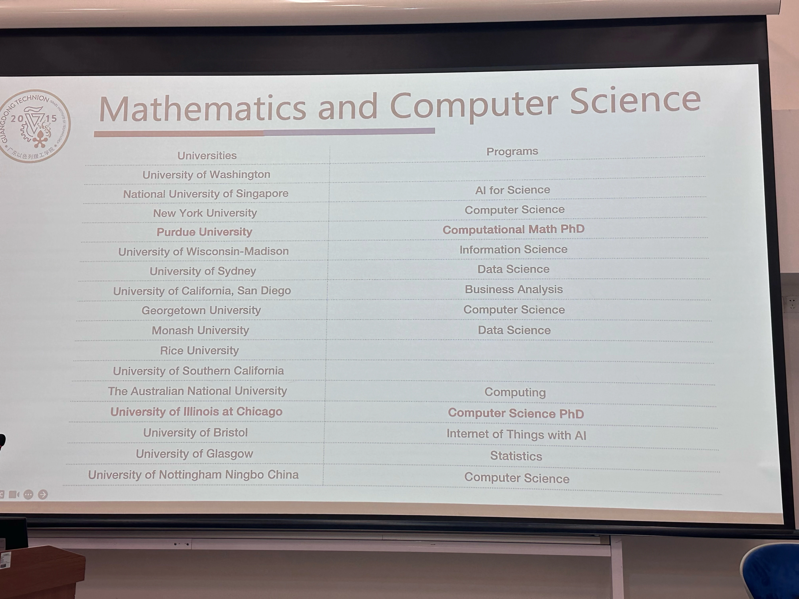
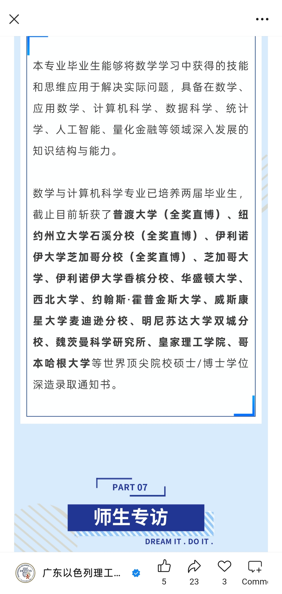

§ 序言
survive-mcs-manual（MCS生存手册）由2025年暑期PT团队创建，参考了知名的上海交大生存手册。恰如其名所示，这是一本旨在帮助MCS同学更好的“生存”下去的操作手册，内容上大致上涵盖过去几届预备学期的组会内容——包括学术规则介绍，学习方法与资源分享，数学与计算机课程内容与结构的一些大致解析，以及目前已经毕业了的学长姐所反馈回来的申研和职业发展相关信息。希望对同学们有所帮助。
（为了更好的视觉效果，推荐使用浅色主题，比如Light或Rust）
投稿
-
将投稿内容发送至mcsptteam@gmail.com，并附上以下信息：
- 您的ID（可以是虚拟也可是真实）
- 广以邮箱（方便可能的交流需要）
- 你是否愿公开自己的联系方式（广以邮箱）
文件格式以
.md为优，如有图片之类的附件，可打包成.zip格式文件发送。 -
目前开放的投稿内容如下：
- 学习笔记!!!（某一门课于某一学期的学习笔记 etc.）
- 学习方法（具体的某一门课 or 总体方向 etc.）
- 学习资源（某一本书 or 某一门网课 or 某网站 etc.）
- 学习心得（对某个领域学习体会 or 某学习阶段的总结 etc.）
- 内容补充（对已有内容的纠错 or 补充 etc.）
PR
暂不开放
贡献者
| ID | Email / Personal-Site |
|---|---|
| @mcsptteam | mcsptteam@gmail.com |
| @Yue-SHI | https://note.etalib.space |
| @shawnkuo | guo14780@gtiit.edu.cn |
| @Zixuan-Huang | huang14145@gtiit.edu.cn |
| @Xiaoqi-LIU | xiaoqi.liuc@gmail.com |
§ 欢迎来到MCS
§ 学术规则介绍
1. Moodle资源介绍
(1.1) Moodle-Undergraduate Studies
教学与课程：制定考试规定、学术纪律条例、排课、选课、重修、学分转换、交换生项目、考试安排、成绩管理、成绩申诉
学籍方面：指定学籍管理规定，提供各类官方证明材料，如在校生证明、排名信息、课程清单、课程大纲、英文授课证明、评分体系说明等，并为相关材料盖章、休学、停学、复学、校内转专业、转学至其他大学以及退学
学术管理：监督学生GPA和课程通过率，识别并帮助(处理)学业不达标的学生
奖学金
考勤管理：强制执行(特别是对新生和GPA低于65分的学生)的课堂考勤政策，处理请假申请，并对缺勤率过高的学生采取相应措施。制定并发布学年校历
(1.2) 2025 Preparatory Period
Requirements on Preparatory Courses towards Winter Semester
All students in the advanced English course with a grade <70 and the students of the intermediate English group need to take 324032-TECHNICAL ENGLISH-ADVANCED A (0 credit).
MCS students who failed in Math (<65) will have extended preparatory and register for the courses following the enrollment rules of MCS.
Class attendance is compulsory for all students during the Preparatory Period.
(1.3.) Moodle-Student Affairs
住宿管理 : 宿舍检查、退宿...管理访客入校申请，并负责学生校外居住的安全管理。
行为规范 : 制定并执行《学生行为规范》、北校区学生中心管理规定等。
团学,社团,其他学生活动 : 负责共青团事务（团员管理及团支部建设）。指导和管理学生社团及各类学生组织，包括社团的建立、注册、管理和活动开展。管理乐器练习房等学生活动设施，支持学生活动。
健康,医疗,安全 : 提供全面的身心健康支持，包括心理健康教育、咨询服务及危机干预。负责学生的医疗保险（医保）事宜。开展性侵犯防治与应对等安全教育工作。
奖助学金 : 负责组织评定和发放国家奖学金、助学金以及课外活动奖项，校内勤工助学项目，处理学生助理岗位申请。注意此处奖助学金是指其他非UG负责的奖学金，也就是说除了学业优秀奖学金以及续得奖学金，其他都有SA负责
实习就业 : 提供Co-op实习岗位信息，组织实习宣讲会。提供职业发展服务，处理毕业生就业推荐表、就业违约等相关手续。
毕业手续 : 负责协调和办理毕业生离校的各项手续。
(1.4) Moodle-Career Services
一对一生涯咨询：提供个人生涯规划、学业发展和职业探索方面的咨询服务。
申请文书修改：提供专业的文书修改服务，包括个人简历（CV）、个人陈述（PS）等，并有明确的提交规范和修改周期建议。
资源提供：建立了一个全面的“申研资源库”，提供从前期准备到最终申请的各类工具和资料，包括：
求职技能培训：提供实习申请攻略，指导学生如何准备中英文简历、应对网申笔试和准备面试（如STAR面试法）。
行业认知拓展：提供“职业树”（分专业职业路径图）、行业白皮书等资源，帮助学生了解不同行业的动态和发展路径。
开设专属课程：提供“Design Your Career”课程，通过系统化的学习，帮助学生探索自我，规划未来。
专题工作坊：举办线下文书写作课等多种主题的工作坊，提升学生的专项技能。
申研资源库内容
2. 预备学期课程概要
数学课
lecture 概念为主
tutorial 习题为主，通过习题帮助理解lecture中所讲的概念
英语课
intermediate
advanced A
以上两门课程成绩不计入GPA
advanced B 计入GPA
(2.1) 数学课要点
一切的复习都是基于笔记
手写笔记软件 : Notability, Goodnotes, OneNote, Noteful etc.
电子笔记软件 : LaTeX, Obsidian, Notion, 思源笔记, Markdown etc.
(2.2) Office hour!!!
任何学术内容都可以通过office hour与老师讨论
(2.3) 英语课要点
| Semester Grade: | |
|---|---|
| Midterm Quiz | 15% |
| Vocabulary Quizze | 10% |
| Final Examination | 20% |
| projects (1st -10%, 2nd – 25%) | 35% |
| Class task (the five question game) | 5% |
| Listening | 5% |
| Homework/classwork/active participation (graded) (main idea, summary, opinion writing) | 10% |
这是分数的重点构成，除了与你的project本身有关，也与你的课堂活跃度有关
课堂目的：锻炼口语，适应英文环境，记住专有名词
(2.4) 面对考试
数学
重点关注老师给出的list中的定理以及在证明或留的Exercise，从而确定考试范围
提前进行复习，从而避免遗忘当周所学内容，比如每个周末都进行回顾
考试中有任何不清晰的问题问教授！！！大学考试自由度高于高中
英语
认真复习老师课上讲过的语法点，英语考试不会超出教授提到的的范围
尽量作答所有题目！！！英语答案很多时候并不唯一
自己带字典！自己带字典！文章中一定会出很多生词，公共字典数量有限！不要因为借字耽误时间
(2.5) 结果
通过预备学期 ➡️ 正常进入正式学期
没通过 ➡️ 进入extend (不计入GPA)，不能选微积分1和代数A或更多课程无法选择
注：高分通过和低分通过几乎没有区别，重点是通过！！！
3. 学业状态不达标的学生
若出现下列情况之一，则该学生的学业表现被视为“不达标”:
GPA < 65分
课程通过(Pass)率低于66%
该生前一学期的学业成绩为“不达标”，且未能成功通过UG的指定课程
截至第四学期为止，英语水平(英语课)仍未达标
六年内仍未学习完本课内容
入学后前两个学期内，课程所获得的总学分低于27分 (不包括第一年需要修读强制性学习计划的学生)
连续三个compulsory学期会被斩杀
Important
以色列理工学院要求6年完成学业，若六年内未能完成学业则无法获得以色列理工学院学位证。
可能的结果: 转专业, 延期毕业, 转学, 退学...
4. A/B考
正式学期有两次考试机会: A考(无需报名)和B考(需报名, 教授会提醒, 在moodle届时会有报名链接), 对于参考安排, 有如下可能性
参加A考但不参加B考 : 不论是否报名B考, 只要不参加B考, 最终成绩取A考
不参加A考但参加B考 : 最终成绩取B考且需报名B考(如果忘记了可以联系UG和教授一般来说问题不大)
参加A考且参加B考 : 最终成绩取B考, 即使B考成绩低于A考, 因此谨慎参加B考
不参加A考且不参加B考 : 最终课程状态记录为incomplete(未完成), 不算入GPA, 也不是0分近似相当于没有上过这门课
5. 有关重修的问题
The FINAL grade (and not the highest grade) always counts. The grade of the retake course(s) is taken into account for GPA in the semester that it is actually taken.
If you FAILED the course(s) (with the grade lower than 55) in the past semesters, you MUST retake the course(s) if it is given (excluding GE/PE courses).
If you would like to retake the program course(s) in which you PASSED, you are entitled to enroll to improve a grade as long as NOT more than 1 year has passed since the original grade was given. You can self-enroll into the retaking courses if within credit limits. If you need additional credits for the retaking courses, you need to fill in the request form for additional credits and submit to UG Office, which will be forwarded to the advisor/head of the department/study program for their approval. With approval you are allowed to take the course(s).
There are good chances that you will encounter scheduling problems. Therefore, after you enroll in the course, please consult with the course instructor about how the grades are to be calculated (class attendance, homework submission and midterm, etc.).
6. 奖学金
(6.1) 2025高考奖学金以及续得
规则仍在更改，请务必以最终版本为准！！！
自行去官网查询：链接
注意:获得进阶激励奖学金的要求是入学已获得过奖学金
如果没有请看后面的学业优秀奖学金
最终解释权归校方所有！！！！！
(6.2) 2025学术卓越奖学金
| Type | Amount (RMB) | Awarding requirement |
|---|---|---|
| Vice Chancellor's List | 105,000 Yuan | GPA >=90 and ranked top 5% in department/study program |
| Dean's List | 75,000 Yuan | GPA >=85 and ranked top 10% in department/study program |
| Department/Program Head's List | 50,000 Yuan | GPA >=85 and ranked top 15% in department/study program |
Student shall study at least 34 credits in the previous academic year.
在广东以色列理工学院入学时获得高考奖学金的学生，若每学年荣获学术卓越奖，将有资格获得额外奖金 (extra 10,000 RMB for and extra 5000 RMB for DH/PH's List)
官网链接：Here
§ 学习方法与心得
§ 通用资源推荐
1. VPN
-
其他VPN（询问PT）
2. Latex
- Latex教程：(Youtube) LaTeX Tutorials
- Overleaf：相当普及的线上latex编辑器
3. 笔记软件
(1) Markdown
- Markdown教程：零基础速通！Typora+Markdown 高效写作全攻略
- Typora：很好用的markdown编辑器
- Obsidian：一个挺好用的支持markdown的笔记软件
§ MCS课程概述
1. 课程体系
| Course Type | Total Credits |
|---|---|
| Program Compulsory Courses (PCC, 必修课) | 113.5 |
| Program Elective Courses (PEC, 专业选修课) | 13.5 |
| General Elective Courses (GE/GEM, 通识选修课) | 6 |
(1) 必修课 (PCC)
- 数学课程: 90 credits
- 计算机课程: 23.5 credits
- 每门课的前置课程表: MCS_Prerequisite_Course_List.pdf
(2) 选修课 (PEC)
-
计算机或数学选修课一共需要修9 credits，同时数学和计算机每个方向至少需要修3 credits
-
科学选修课需要修1.5 credits
-
每个学期数学与计算机的选修课会有些许调整，具体课程安排以每学期选课时UG的发的Course List为准
(2.1) 数学选修课 (EM)
| Code | Course | Credits |
|---|---|---|
| 104030 | Introduction to PDE | 3.5 |
| 104273 | Introduction to Functional Analysis and Fourier Analysis | 5 |
| 104280 | Modules, Rings and Groups | 3 |
| 104274 | Fields Theory | 3 |
| 104144 | Topology | 3 |
| ... | ... | ... |
(2.2) 计算机选修课 (ECS)
| Code | Course | Credits |
|---|---|---|
| 106860 | Theory of Compilation | 3 |
| 106843 | Theory of Computation | 3 |
| 234267 | Computer Architecture | 3 |
| ... | ... | ... |
(2.3) 科学选修课 (ESC)
| Code | Course name | Credits |
|---|---|---|
| 114075 | Physics 2M | 5 |
| 114054 | Physics 3 | 3.5 |
| 114073 | Introduction to quantum physics for engineers | 3.5 |
| 114246 | Electromagnetisms and electrodynamics | 5 |
| 114101 | Analytic mechanics | 4 |
| 124503 | Physical chemistry 1B | 2.5 |
| 124801 | Organic chemistry 1B | 2.5 |
| 125001 | General chemistry | 3.0 |
| 124120 | Fundamentals of chemistry | 5.0 |
| 125801 | Organic chemistry | 5.0 |
| 134020 | General genetics | 3.5 |
| 134058 | Biology 1 | 3.0 |
| 134127 | Topics in biology | 2.0 |
| 236523 | Introduction to bioinformatics | 2.5 |
If the course taken from the list is worth more than 1.5 credits, up to 1 credit (over 1.5) can be used as Program Elective-CS or Program Elective-Math.
2. 培养方案对比
(1) 广以MCS开设课程
- 参考官方网站 : 本科课程设置【数学与应用数学专业】
| 数学专业课 | 计算机专业课 | 其他课程 / 毕业强制要求 |
|---|---|---|
| 数学基本概念 | 计算机科学导论 | 其他: |
| 微积分/数学分析 1、2、3 | 系统编程导论 | 物理 1M |
| 代数 A、B | 数据结构 | 物理 2 |
| 集合论 | 数字系统和计算机结构 | 科学选修 3.5分 |
| 群论 | 计算机组织和编程 | 毕业强制要求: |
| 环和域导论 | 操作系统 | 英语 |
| 模论、域论 | 计算机专业选修: | 通识选修 6分 |
| 度量与拓扑空间 | 编译理论 | 2门体育课 |
| 组合学 | 计算理论 | 8门时政课 |
| 组合算法 | 计算机结构 | |
| 概率论 | 编程语言 | |
| 常微分方程 | 密码学 | |
| 函数论/复变函数 | ...... | |
| 实函数/实变函数 | ||
| 微分几何 | ||
| 数值分析 | ||
| 数理逻辑 | ||
| 应用数学导论 | ||
| 数学专业选修: | ||
| 泛函分析 | ||
| 数学项目 |
(2) 汕头大学数学与应用数学
| 专业必修课 (22 门 77 学分) | 综合选修课 (不少于 14 学分) |
|---|---|
| MAT1001B 微积分 A-I | MAT1010A 数学思想方法及应用 |
| MAT1002B 线性代数与解析几何 I | BUS1002A 微观经济学 |
| MAT1003B 微积分 A-II | BUS1003B 宏观经济学 |
| MAT1004B 线性代数与解析几何 II | BUS2204A 国际金融学 |
| MAT2001A 数学分析 I | BUS1004A 会计学 |
| MAT2002A 数学分析 II | BUS1006A 公司财务 |
| MAT2003A 概率论 | FIN1006A 证券投资学 |
| MAT2004A 常微分方程 | FIN1002A 金融工程 |
| MAT2005A 数学模型 | CST2701A 数据结构(非计算机专业) |
| MAT2007A 数学规划 | CST3503B 操作系统原理 |
| MAT3001A 复变函数 | MAT2006A 金融数学 |
| MAT3002A 数理统计 | MAT2008A 离散数学 |
| MAT3003A 数值分析 | MAT2009A 数据库管理系统 |
| MAT3004A 实变函数 | MAT2010A 机器人与智能计算 |
| MAT3006A 抽象代数 | MAT2011A 组合数学 |
| MAT3022A 偏微分方程 | MAT2012A 初等数论 |
| MAT4001A 泛函分析 | MAT3007A 数学建模实践 |
| MAT4009A 基础拓扑 | MAT3008A 模糊数学 |
| PHY1101A 普通物理 2A | MAT3010A 管理信息系统 |
| PHY1102A 普通物理 2B | MAT3011A 图论 |
| PHY1105A 大学物理实验 (1) | MAT3012A 数理经济学 |
| COM2001A C 语言程序设计 | MAT3013A 系统与数学控制实验 |
| MAT3016A 专业英语 | |
| MAT3017A 最优化理论与方法 | |
| MAT3020A 微分几何 | |
| MAT3021A 经典控制 | |
| MAT3023A 文献检索与科技论文 | |
| MAT4002A 保险精算 | |
| MAT4003A 图像处理 | |
| MAT4004A 矩阵理论 | |
| MAT4006B 代数选讲 | |
| MAT4007B 分析选讲 | |
| MAT4008A 小波分析 | |
| MAT5003A 现代数学讲座 | |
| STA2021B Python 数据分析 | |
| STA3005A 金融时间序列分析 | |
| STA3014A 随机过程与金融 | |
| STA3015A 多元统计分析 | |
| STA3019A R 语言编程 | |
| STA3031A 高等概率论 | |
| STA3032A 可靠性理论 | |
| STA3033A 非参数统计 | |
| STA3035A 统计学习 | |
| STA4001A 抽样技术 | |
| STA4002A 贝叶斯统计 | |
| STA4003A 生物统计 | |
| MAT4010A 复分析 | |
| MAT4011A 代数拓扑 | |
| MAT4012A 微分流形 | |
| MAT4013A 交换代数 | |
| MAT4014A 偏微分方程数 | |
| PHY3011A 自动控制原理 |
(3) 宁诺数学与应用数学
- 参考官方网站 : 数学与应用数学理学学士
| 第一年 | 第二年 | 第三年 | 第四年 |
|---|---|---|---|
| 高等基础数学 1 | 必修课 | 必修课 | 选修课 |
| 高级基础数学 2 | 概率 | 矢量微积分 | 数理医药学与生物学 |
| 基础科学 A: 物理 | 微积分 | 科学计算导论 | 科学计算与数值分析 |
| 数学软件 | 分析和计算基础 | 微分方程建模 | 随机模型 |
| 学术阅读与写作 | 应用数学 | 微分方程和傅里叶分析 | 度量和拓扑空间 |
| 口语交流技巧 A | 线性代数 | 选修课 | 编码与密码术 |
| 特定学术语境中的英语 B: 理学与工程学 | 统计 | 数学分析 | 金融数学 |
| 口语交流技巧 B | 选修课 | 统计模型和方法 | 优化理论 |
| 会计概论 | 概率模型和方法 | 博弈论 | |
| 纯数学基础 | 复变函数 | 离散数学和图论 | |
| 热力学与流体力学 1 | 数字通信 | ||
| 财务会计与管理会计基础 | 热力学与流体力学 2 | ||
| 商务金融 | 设计制造 | ||
| 数字经济 | |||
| 数学结构 |
(4) 中山大学数学与应用数学
| 课程类别 | 课程编码 | 课程名称/英文名称 |
|---|---|---|
| 学科大类基础课 | MA101 | 数学分析 Mathematical Analysis |
| MA102 | 数学分析 Mathematical Analysis | |
| MA201 | 数学分析 Mathematical Analysis | |
| MA103 | 几何与代数 Geometry and Algebra | |
| MA104 | 几何与代数 Geometry and Algebra | |
| DCS1011 | 程序设计与实践（一） | |
| 专业基础课 | MA203 | 常微分方程 Ordinary Differential Equations |
| MA301 | 代数学 Algebra | |
| MA209 | 概率论 Probability | |
| MA305 | 偏微分方程 Partial Differential Equations | |
| 专业核心课 | MA207 | 数值分析 Numerical Analysis |
| MA204 | 复变函数 Functions of a Complex Variable | |
| MA202 | 实变函数 Functions of Real Variables | |
| MA303 | 数学实验与数学软件 Mathematical Experiments and Mathematical Software | |
| MA302 | 泛函分析 I Functional Analysis I | |
| MA210 | 数理统计 Mathematical Statistics | |
| MA304 | 微分几何 Differential Geometry | |
| MA400 | 毕业论文 Graduation Thesis |
| 第一列课程 | 第二列课程 | 第三列课程 | 第四列课程 |
|---|---|---|---|
| 离散数学 Discrete Mathematics | 学年论文 Annual Thesis | 数据库原理与应用 Database System | 泛函分析 II Functional Analysis II |
| 统计学导论 Introduction to Statistics | 密码学与信息安全 Cryptography and Information Security | 拓扑学 Topology | 现代偏微分方程 Modern Partial Differential Equations |
| 数论基础 | 矩阵分析 Matrix Analysis | 计算机图形学 Computer Graphics | 控制理论导论 Introduction to Control Theory |
| 大学物理 (理) 上 | 随机过程 Stochastic Processes | 生产实习、社会实践 Production Practice and Social Practice | 控制动力学引论 The Introduction to Control Dynamic |
| 大学物理 (理) 下 | 应用回归分析 Applied Regression Analysis | 生物数学 Biomathematics | 随机运筹学 Stochastic Operations Research |
| 数据结构与算法 Data Structure and Algorithms | 数字图像处理 Digital Image Processing | 傅立叶分析及其应用 Fourier Analysis and Applications | 黎曼几何 Introduction of Riemann Geometry |
| 数据结构与算法实验 Data Structure and Algorithms Experimentation | 运筹学 Operations Research | 计算机视觉 Computer Vision | 交换代数 Commutative Algebra |
| 数学分析进阶 Advance of Mathematical Analysis | 数学模型 Mathematical Model | 非线性动力学及其应用 Nonlinear Dynamics with Applications | |
| 计算机原理与汇编语言 Principles of Computer and Assembly Language | 演化博弈论 Evolutionary Game Theory | ||
| 计算机原理与汇编语言实验 Principles of Computer and Assembly Experiments |
(5) 结论
GTIIT的MCS是Mathematics with Computer Science（数学与计算机科学）而不是数学与应用数学
§ 数学课程介绍
§ 数学学习资源
1. GTIIT Panapto
GTIIT Panapto: GTIIT的课程录像网站, 疫情期间算是塞翁失马，留下了许多当时的网课视频。可作参考与补充，但内容还是以所上课程的教授为准。
- Algebra
- Algebra 1M - Interantional : 可作为Algebra A的参考
- Algebra B - Tutorial
- Calculus
- ODE
- Pure Math
§ 数学课程评析
0. Preparatory Semster 预备学期
| Code | Course Name | Type | Credits |
|---|---|---|---|
| Prep | PRE-ACADAMIC SEMESTER (预备学期) | PCC | 0 |
1. Analysis 分析
| Code | Course Name | Type | Credits |
|---|---|---|---|
| 104195 | INFINITESIMAL CALCULUS 1 | PCC | 5.5 |
| 104281 | INFINITESIMAL CALCULUS 2 | PCC | 5 |
| 104295 | INFINITESIMAL CALCULUS 3 | PCC | 5 |
| 104285 | ORDINARY DIFFERENTIAL EQUATIONS A (ODE) | PCC | 3.5 |
| 104122 | FUNCTIONS THEORY 1 | PCC | 3.5 |
| 104165 | REAL FUNCTIONS | PCC | 3.5 |
| 104030 | INT. TO PARTIAL DIFFERENTIAL EQUATIONS (PDE) | EM | 3.5 |
| 104273 | INT. TO FUNCTIONAL ANALYSIS AND FOURIER ANALYSIS | EM | 5 |
2. Algebra 代数
| Code | Course Name | Type | Credits |
|---|---|---|---|
| 104066 | ALGEBRA A | PCC | 5.5 |
| 104168 | ALGEBRA B | PCC | 5 |
| 104158 | INTRODUCTION TO GROUPS | PCC | 3.5 |
| 104279 | INTRODUCTION TO RINGS AND FIELDS | PCC | 2.5 |
| 104280 | MODULES, RINGS AND GROUPS | PCC or EM | 3 |
| 104274 | FIELDS THEORY | PCC or EM | 3 |
| 106381 | MODERN ALGEBRA 2 | EM | 3 |
| 106432 | REPRESENTATIONS OF THE SYMMETRIC GROUPS | EM | 3 |
3. Geometry 几何
| Code | Course Name | Type | Credits |
|---|---|---|---|
| 104142 | METRIC AND TOPOLOGICAL SPACES | PCC | 3.5 |
| 104177 | DIFFERENTIAL GEOMETRY | PCC | 3.5 |
| 104144 | TOPOLOGY | EM | 3 |
4. Discrete Mathematics 离散数学
| Code | Course Name | Type | Credits |
|---|---|---|---|
| 104002 | BASIC CONCEPTS IN MATHEMATICS | PCC | 2.5 |
| 104286 | COMBINATORICS | PCC | 2.5 |
| 104293 | SET THEORY | PCC | 2.5 |
| 106156 | MATHEMATICAL LOGIC | PCC | 3 |
| 104291 | COMBINATORIAL ALGORITHMS | PCC | 3.5 |
5. Applied Math 应用数学
| Code | Course Name | Type | Credits |
|---|---|---|---|
| 104294 | INTRODUCTION TO NUMERICAL ANALYSIS | PCC | 5 |
| 104192 | INTRODUCTION TO APPLIED MATHEMATICS | PCC | 3 |
| 104222 | PROBABILITY THEORY | PCC | 3.5 |
| 106434 | MATHEMATICAL STATISTICS | EM | 3.5 |
6. Physics 物理
| Code | Course Name | Type | Credits |
|---|---|---|---|
| 114071 | PHYSICS 1M | PCC | 3.5 |
| 114052 | PHYSICS 2 | PCC | 3.5 |
PRE-ACADAMIC SEMESTER 预备学期
1. Basic Information 基本信息
| Credits 学分 | Type 类型 | Difficulty 参考难度 | Prerequisites 前置课程 |
|---|---|---|---|
| 0 | PCC | ★ | High School Math |
2. Recomanded Resources 推荐资源
3. Contributed Learning Tips 学习方法投稿
- TODO
4. Notes Sharing 笔记分享
- MCS PT Team 2023 Summer
104195 - INFINITESIMAL CALCULUS 1
1. Basic Information 基本信息
| Credits 学分 | Type 类型 | Difficulty 参考难度 | Prerequisites 前置课程 |
|---|---|---|---|
| 5.5 | PCC | ★★ | PRE-ACADAMIC SEMESTER (预备学期) |
2. Recomanded Resources 推荐资源
- Understanding Analysis, Stephen Abbott
- 1st Edition: 英文版, Instructor's Solutions Manual
- 2nd Edition: 英文版, 中文版, Instructor's Solutions Manual, Solutions by Ulisse Mini
3. Contributed Learning Tips 学习方法投稿
- TODO
4. Notes Sharing 笔记分享
- @Yue-SHI: https://note.etalib.space
104281 - INFINITESIMAL CALCULUS 2
1. Basic Information 基本信息
| Credits 学分 | Type 类型 | Difficulty 参考难度 | Prerequisites 前置课程 |
|---|---|---|---|
| 5 | PCC | ★★ | 104195 - INFINITESIMAL CALCULUS 1 |
2. Recomanded Resources 推荐资源
3. Contributed Learning Tips 学习方法投稿
- TODO
4. Notes Sharing 笔记分享
- @Yue-SHI: https://note.etalib.space
104285 - ORDINARY DIFFERENTIAL EQUATIONS A
1. Basic Information 基本信息
| Credits 学分 | Type 类型 | Difficulty 参考难度 | Prerequisites 前置课程 |
|---|---|---|---|
| 3.5 | PCC | ★★★ | 104168 - ALGEBRA B 104281 - INFINITESIMAL CALCULUS 2 |
2. Recomanded Resources 推荐资源
3. Contributed Learning Tips 学习方法投稿
- TODO
4. Notes Sharing 笔记分享
- @Xiaoqi-LIU xiaoqi.liuc@gmail.com
104122 - FUNCTIONS THEORY 1
1. Basic Information 基本信息
| Credits 学分 | Type 类型 | Difficulty 参考难度 | Prerequisites 前置课程 |
|---|---|---|---|
| 3.5 | PCC | ★★★ | 104281 - INFINITESIMAL CALCULUS 2 |
2. Recomanded Resources 推荐资源
3. Contributed Learning Tips 学习方法投稿
-
@Zixuan-HUANG huang14145@gtiit.edu.cn
-
你好！我想要投稿数学系 (104122) Function Theory （复变函数与积分变换）这门课的学习资源。是b站这位博主的讲，这里是视频链接。 这位博主是本部和广以的博士，他讲的复变函数就是按照我们学校的教学进度来讲的，讲的非常不错。
-
这里是博主链接明文：https://space.bilibili.com/14767534
这里是视频链接明文：https://www.bilibili.com/video/BV1P44y1873i/
去年我因为课程冲突报了没去上课，整个学期靠听他的课和自己看这门课广以的课本考了92，另一位和我一样的同学考了95，我们认为他的课是极有帮助的，故来投稿，希望能帮到大家。
-
同时这位up的ode讲得也是很不错，我也认识有同学靠听他的ode考了100的。这位博主其他教学视频也适合材料，化工的同学观看！
-
-
TODO
4. Notes Sharing 笔记分享
104165 - REAL FUNCTIONS
1. Basic Information 基本信息
| Credits 学分 | Type 类型 | Difficulty 参考难度 | Prerequisites 前置课程 |
|---|---|---|---|
| 3.5 | PCC | ★★★★ | 104281 - INFINITESIMAL CALCULUS 2 |
2. Recomanded Resources 推荐资源
- TODO
3. Contributed Learning Tips 学习方法投稿
- TODO
4. Notes Sharing 笔记分享
- @Xiaoqi-LIU xiaoqi.liuc@gmail.com
104066 - ALGEBRA A
1. Basic Information 基本信息
| Credits 学分 | Type 类型 | Difficulty 参考难度 | Prerequisites 前置课程 |
|---|---|---|---|
| 5.5 | PCC | ★★ | PRE-ACADAMIC SEMESTER (预备学期) |
2. Recomanded Resources 推荐资源
- GTIIT Panapto
- 城南讲马堂 - Linear Algebra [Hoffman & Kunze] (2ed) Solution
- Linear Algebra Done Right, 4th Ed.
3. Contributed Learning Tips 学习方法投稿
- TODO
4. Notes Sharing 笔记分享
- @Yue-SHI: https://note.etalib.space
104168 - ALGEBRA B
1. Basic Information 基本信息
| Credits 学分 | Type 类型 | Difficulty 参考难度 | Prerequisites 前置课程 |
|---|---|---|---|
| 5 | PCC | ★★★★ | 104066 - ALGEBRA A |
2. Recomanded Resources 推荐资源
- GTIIT Panapto
- 城南讲马堂 - Linear Algebra [Hoffman & Kunze] (2ed) Solutions
- Linear Algebra Done Right, 4th Ed.
3. Contributed Learning Tips 学习方法投稿
- TODO
4. Notes Sharing 笔记分享
- @Yue-SHI: https://note.etalib.space
104158 - INTRODUCTION TO GROUPS
1. Basic Information 基本信息
| Credits 学分 | Type 类型 | Difficulty 参考难度 | Prerequisites 前置课程 |
|---|---|---|---|
| 3.5 | PCC | ★★★ | 104168 - ALGEBRA B |
2. Recomanded Resources 推荐资源
3. Contributed Learning Tips 学习方法投稿
- TODO
4. Notes Sharing 笔记分享
104279 - INTRODUCTION TO RINGS AND FIELDS
1. Basic Information 基本信息
| Credits 学分 | Type 类型 | Difficulty 参考难度 | Prerequisites 前置课程 |
|---|---|---|---|
| 2.5 | PCC | ★★★ | 104158 - INTRODUCTION TO GROUPS |
2. Recomanded Resources 推荐资源
- TODO
3. Contributed Learning Tips 学习方法投稿
- TODO
4. Notes Sharing 笔记分享
104280 - MODULES, RINGS AND GROUPS
1. Basic Information 基本信息
| Credits 学分 | Type 类型 | Difficulty 参考难度 | Prerequisites 前置课程 |
|---|---|---|---|
| 3 | PCC or EM | ★★★★★ | 104279 - INTRODUCTION TO RINGS AND FIELDS |
2. Recomanded Resources 推荐资源
- TODO
3. Contributed Learning Tips 学习方法投稿
- TODO
4. Notes Sharing 笔记分享
104274 - FIELDS THEORY
1. Basic Information 基本信息
| Credits 学分 | Type 类型 | Difficulty 参考难度 | Prerequisites 前置课程 |
|---|---|---|---|
| 3 | PCC or EM | ★★★★ | 104279 - INTRODUCTION TO RINGS AND FIELDS |
2. Recomanded Resources 推荐资源
- TODO
3. Contributed Learning Tips 学习方法投稿
- TODO
4. Notes Sharing 笔记分享
104177 - DIFFERENTIAL GEOMETRY
1. Basic Information 基本信息
| Credits 学分 | Type 类型 | Difficulty 参考难度 | Prerequisites 前置课程 |
|---|---|---|---|
| 3.5 | PCC | ★★★★★ | 104168 - ALGEBRA B 104295 - INFINITESIMAL CALCULUS 3 104142 - METRIC AND TOPOLOGICAL SPACES |
2. Recomanded Resources 推荐资源
- TODO
3. Contributed Learning Tips 学习方法投稿
- TODO
4. Notes Sharing 笔记分享
104002 - BASIC CONCEPTS IN MATHEMATICS
1. Basic Information 基本信息
| Credits 学分 | Type 类型 | Difficulty 参考难度 | Prerequisites 前置课程 |
|---|---|---|---|
| 2.5 | PCC | ★ | PRE-ACADAMIC SEMESTER (预备学期) |
2. Recomanded Resources 推荐资源
- TODO
3. Contributed Learning Tips 学习方法投稿
- TODO
4. Notes Sharing 笔记分享
- @Yue-SHI: https://note.etalib.space
104286 - COMBINATORICS
1. Basic Information 基本信息
| Credits 学分 | Type 类型 | Difficulty 参考难度 | Prerequisites 前置课程 |
|---|---|---|---|
| 2.5 | PCC | ★★★ | PRE-ACADAMIC SEMESTER (预备学期) |
2. Recomanded Resources 推荐资源
- TODO
3. Contributed Learning Tips 学习方法投稿
- TODO
4. Notes Sharing 笔记分享
- @Yue-SHI: https://note.etalib.space
104293 - SET THEORY
1. Basic Information 基本信息
| Credits 学分 | Type 类型 | Difficulty 参考难度 | Prerequisites 前置课程 |
|---|---|---|---|
| 2.5 | PCC | ★★★ | 104002 - BASIC CONCEPTS OF MATHEMATICS |
2. Recomanded Resources 推荐资源
- (GTIIT Panapto) Set Theory - Tutorial - 20 Winter
- (Youtube) U.C. Berkeley Math 135 - Intro to Set Theory
- Introduction to Set Theory, Third Edition, Revised and Expanded, by Karel Hrbacek and Thomas Jech
3. Contributed Learning Tips 学习方法投稿
- TODO
4. Notes Sharing 笔记分享
- TODO
106156 - MATHEMATICAL LOGIC
1. Basic Information 基本信息
| Credits 学分 | Type 类型 | Difficulty 参考难度 | Prerequisites 前置课程 |
|---|---|---|---|
| 3 | PCC | ★★★ | 104002 - BASIC CONCEPTS IN MATHEMATICS |
2. Recomanded Resources 推荐资源
- TODO
3. Contributed Learning Tips 学习方法投稿
- TODO
4. Notes Sharing 笔记分享
104294 - INTRODUCTION TO NUMERICAL ANALYSIS
1. Basic Information 基本信息
| Credits 学分 | Type 类型 | Difficulty 参考难度 | Prerequisites 前置课程 |
|---|---|---|---|
| 5 | PCC | ★★★ | 104281 - INFINITESIMAL CALCULUS 2 |
2. Recomanded Resources 推荐资源
- TODO
3. Contributed Learning Tips 学习方法投稿
- TODO
4. Notes Sharing 笔记分享
104192 - INTRODUCTION TO APPLIED MATHEMATICS
1. Basic Information 基本信息
| Credits 学分 | Type 类型 | Difficulty 参考难度 | Prerequisites 前置课程 |
|---|---|---|---|
| 3 | PCC | ★★★★ | 104281 - INFINITESIMAL CALCULUS 2 104295 - INFINITESIMAL CALCULUS 3 104285 - ORDINARY DIFFERENTIAL EQUATIONS A |
2. Recomanded Resources 推荐资源
- TODO
3. Contributed Learning Tips 学习方法投稿
- TODO
4. Notes Sharing 笔记分享
104222 - Probability Theory
1. Basic Information 基本信息
| Credits 学分 | Type 类型 | Difficulty 参考难度 | Prerequisites 前置课程 |
|---|---|---|---|
| 3.5 | PCC | ★★★ | 104281 - INFINITESIMAL CALCULUS 2 |
2. Recomanded Resources 推荐资源
- TODO
3. Contributed Learning Tips 学习方法投稿
- TODO
4. Notes Sharing 笔记分享
§ 计算机课程介绍
1. MCS的计算机课程特点
-
内容浓缩 : 虽然CS课程的学分少，但经常一门课包含多种语言，多层面的知识。
-
作业次数少而精 : 大部份计算机课程的作业都只有3-4次，单次作业不是题量大就是难度大。
-
Linux !!!
-
几乎所有课程都是基于Linux平台进行教学的，特别是涉及计算机底层架构的课程。
-
强烈推荐在个人电脑上安装可运行的Linux发行版(wsl, Ubuntu等等)，并熟悉Linux的基本命令操作。
-
-
Mathematics vs. Computer Science
- 随时与计算机沟通 : 与数学证明的过程相比，学习CS的方便之处是你可以随时让计算机告诉你你写的过程是不是成立的。
- Learn Math with CS : 可以试着使用计算机的方法让数学知识生动起来。 比如Donut math: how donut.c works, NetworkX.
- Enpower CS with Math : 许多计算机问题本质上是由不同领域的数学问题发展而来，如何从优化既有代码即可以从计算机架构方面着手（比如考虑多线程并行），也可以从支撑代码背后的数学原理方面考虑。
2. 学习建议
-
先原则，后具体 - Abstraction vs. Implementation
-
技术细节琳琅满目，而且新的技术无时无刻不在推陈出新。如果不先把握大的原则，很容易会迷失在各种各样的技术细节中，不知所云。
-
反过来说，不同的技术、语言、系统可能有不同的技术细节，但他们的遵循的原则理念基本上是一致的。先从概念的抽象入手，然后再慢慢的钻研具体的实现，也即“自顶向下 (Top-down approach)”。
-
-
用，而非学工具 - Use vs. Study
CS世界有很多的好用的工具，比如git, gcc等等。不需要也不太可能掌握所有功能，只需把最少必要的功能先用起来，或者在出问题的情况能够及时的找到相关使用指南，比如命令行中的
man工具。 -
Hello-World Everything First
熟悉新系统、新语言、新机制的过程中，先从最基本的“Hello World"开始，熟悉了最基础的功能再慢慢向外探索。
-
适度且正确使用AI工具 - Programmer vs. Coder
-
向AI正确提问，并生成范例把你教会，而不是直接帮你做作业。部分课程对AI输出内容严查严打，很容易被判零分。
-
Programming ≠ Coding : 虽然AI工具越来越让人可以摆脱具体的编码任务，但不通过一行一行具体的代码编写练习，你无法让AI帮你注意到你甚至都不知道的东西，即AI可以帮你完成coding，但还是无法帮你完成programming。
-
-
技术笔记 - 知识管理系统
- 使用一个方便且好用的工具做你的技术笔记，经常查看，时常维护，记录你对某个课程问题的解答与对知识的总结。
- 做技术笔记的过程中，区分针对不同类型对象的记笔记的方法的异同，比如是一门语言，还是一个命令行工具，抑或是某个算法？
- 推荐资源：
- Markdown教程：零基础速通！Typora+Markdown 高效写作全攻略
- Typora：很好用的markdown编辑器
- Obsidian：一个挺好用的支持markdown的笔记软件
- Latex教程：(Youtube) LaTeX Tutorials
- Overleaf：相当普及的线上latex编辑器
§ 计算机学习资源
General Rule : Professors always go first, then something else.
基本规则 : 以教授讲授的内容为纲要，用其他的资源作为补充。
0. 基础配置
1. 闭眼收藏
- Github：传说中的程序员交友社区
- Zlibrary: 世界上最大的电子书库，网址会经常改动，建议关注社交账号，部分书籍需要Tor Browser下载
- Library Genesis：与Zlib类似的电子书库
2. 资源合集
-
CS自学指南: 一个非常有名的自学网站，有很多外国大学的课程资料，适合针对具体内容查找
@Zixuan-Huang huang14145@gtiit.edu.cn
可以当作一个导航，里面有很多计算机学习资源，包括课程、书籍、工具等。 但是需要注意的是里面推荐的课程极难，而且需要耗费极大时间。甚至有一些课程网站年久失修了，只推荐看看路线图，然后自己去找难度适中的课程。
-
自学计算机科学: 一个外国博主基于他的自身经历写的自学路径。
-
Geeksforgeeks: 基本上无所不包的计算机知识网站。
3. 线上课程
4. 大厂 & 社区
许多大厂为了推广自己的产品/服务，扩展自己平台的开发者，时不时的会推出一些配套课程，内容深度从初学者到高级开发者都有覆盖。
(1) Nvidia
- Nvidia Developer : 英伟达开发者社区
- Deep Learning Institute (DLI) 中文版页面：深度学习培训中心 有些课程有中文版，但更多的没有。所以优先推荐使用英文版页面。 英伟达的课程分为两类：自主培训(self-paced)和讲师指导(Instructor-Led)。 部分课程需要付费，新注册的账号可以免费领取一个付费课程。
(2) Google
- Google for Developers : 谷歌开发者社区
- Grow with Google : 谷歌培训课程
- Learn AI & ML Guide : AI和ML的学习指引
- Google ML : 专门的ML学习板块
- Google Drive：比百度网盘好用N倍的云盘
- Google Colab：相当于可以在线上使用的Jupyter Notebook
(3) Microsoft
- Microsoft Learn
- Machine Learning for Beginners: Microsoft Learn中的一些课程合集，简要介绍了一些ML的基础知识，理论部分稍微少了一点，主要偏向代码实现。代码可以在线上运行，算是比较好评的部分。
(4) FreeCodeCamp
5. 刷题 & 竞赛
- Leetcode: 最经典的计算机算法刷题网站，有很多的免费教程可以参考，对Data Structure学习有一定帮助。里面有很多现成的学习计划和学习指导，可以让你不至于不知道从何开始。推荐从编程基础 0 到 1开始。
- 拼题A PTA: 国内的计算机刷题平台。推荐从PAT (Basic Level) Practice（中文）的前三十道题开始入手。跟leetcode不一样的是，这个需要你写一个完整的程序，而非只是整个程序中的一部分。
- Kaggle: 相当于机器学习模型的刷题网站，上面有很多现成的数据可供训练。
- deep-ml: 一个跟leetcode风格很类似的，专注于机器学习的刷题网站。
- mcmicm: 大名鼎鼎的美国大学生数学建模比赛（美赛）的官网。
6. 知名出版社网站
关注一些知名的出版社网站，随时follow最新的技术动向和出版物，拓展一些视野。
§ 计算机课程评析
(1) Programming Languages 编程语言
| Code | Course Name | Type | Credits |
|---|---|---|---|
| 104814 | Introduction to Computer Science M | PCC | 4 |
| 104824 | Introduction to Systems Programming | PCC | 4 |
| 236319 | PROGRAMMING LANGUAGES | ECS |
(2) Data Structures and Algorithms 数据结构与算法
| Code | Course Name | Type | Credits |
|---|---|---|---|
| 104918 | Data Structures 1 | PCC | 3 |
| 104291 | Combinatorial Algorithms | PCC | 3.5 |
| 236651 | ADVANCED TOPICS IN SOFTWARE ENGINEERING | ECS |
(3) Computer Systems 计算机系统
| Code | Course Name | Type | Credits |
|---|---|---|---|
| 104952 | Digital Systems and Computer Structure | PCC | 5 |
| 104818 | Computer Organization and Programming | PCC | 3 |
| 104823 | Operating Systems | PCC | 4.5 |
| 234267 | Computer Architecture | ECS |
(4) Theoretical Computer Science 理论计算机科学
| Code | Course Name | Type | Credits |
|---|---|---|---|
| 106156 | MATHEMATICAL LOGIC | PCC | 3 |
| 106843 | THEORY OF COMPUTATION | ECS | |
| 106860 | THEORY OF COMPILATION | ECS | |
| 236646 | ADVANCED TOPICS IN THEORETICAL COMPUTER SCIENCE | ECS | |
| 104250 | Computer Aided Problem Solving 1 (Intro to quantum computing) | ECS |
(5) Projects and Seminars 项目与研讨课
| Code | Course Name | Type | Credits |
|---|---|---|---|
| 236817 | SEMINAR IN NATURAL LANGUAGE PROCESSING | ECS | |
| 236801 | SEMINARS IN CS 1 | ECS | |
| 236503 | PROJECT IN CS ADVANCED PROGRAMMING 1 | ECS | |
| 234291 | PROJECT 2 IN COMPUTER SCIENCE | ECS |
(6) Other Areas 其他领域
- Embedded System 嵌入式系统
- Computer Graphics & Rendering 计算机图形学与渲染
- Data Science 数据科学
- Artificial Intelligence 人工智能
- Parallel Programming 并行计算
104814 - Introduction to Computer Science M
1. Basic Information 基本信息
| Credits 学分 | Type 类型 | Difficulty 参考难度 | Languages 语言 | Prerequisites 前置课程 |
|---|---|---|---|---|
| 4 | PCC | ★★★ | C |
2. Recommanded Resources 推荐资源
- The Linux Command Line: A Complete Introduction, 2nd Ed: 中文版, 英文版
- C Programming Language, 2nd Ed: 中文版, 英文版, 书本答案
- C How to Program, 8th Ed: 中文版, 英文版
- Havard CS50: 课程网站
- Leetcode - 编程基础 0 到 1：用C语言过完一遍，基础就差不多可以了
- PAT (Basic Level) Practice：用C语言试试写前三十道题，难度稍微高一些
3. Contributed Learning Tips 学习方法投稿
-
@mcsptteam mcsptteam@gmail.com
熟悉Linux命令行指令，熟悉gcc的基本使用方法，以及C语言最基本的语法。
-
@Zixua-Huang huang14145@gtiit.edu.cn
-
这门课程一开始会教点简单的unix-like操作系统命令行操作，随后就是c语言教学。教学课本则是c语言这门语言的两位开发者本人的书 《The C Programming Language》 K&R 从基本语法一路学习到指针之前的内容（不包含指针）， 重点在于数组操作。
-
会涵盖基本的算法，比如二分搜索之类的。 值得注意的是这门课不会告诉你如何搭建开发环境（因为它默认你是在unix-like系统上写作业的！），也不会告诉你要使用ide（集成开发环境，比如vscode加上c语言语法检测插件之类的），更不会教你怎么ddebugger调试程序。所以推荐大家下载个code：：block或者是visual studio社区版，这样写作业体验会好点，至少有实时的语法报错提示和点击即用debugger。
-
此外强烈建议上这门课时去搜debugger如何使用， 并且熟练使用它。感兴趣的同学推荐去搜索一下c语言是如何从源代码文件变成可执行文件的，这样会加强你对底层原理的理解。有兴趣的话也可以自己搭配开发工具链 （比如gcc + gdb + makefile, 或者msvc2全家桶）来写作业，这样会加深你对编译原理和底层原理的理解。
-
最后一说，如果感觉不习惯vim的话你完全没有必要使用它。你可以使用其他的文本编辑器，比如vscode或者是记事本打开都行。因为vim真正能发挥出作用是作为ide的插件存在，单独配置的话你得装一万个插件，这对于入门新手来说简直是地狱般的体验。 期末考试是肉编器手写代码，所以请务必牢记语法。
-
4. Notes Sharing 笔记分享
- TODO
104824 - Introduction to Systems Programming
1. Basic Information 基本信息
| Credits 学分 | Type 类型 | Difficulty 参考难度 | Languages 语言 | Prerequisites 前置课程 |
|---|---|---|---|---|
| 4 | PCC | ★★★ | Java, C++, Python | 104814 - Introduction to Computer Science M |
2. Recomanded Resources 推荐资源
- Objects First with Java: 中文版, 英文版 (Tor Browser)
- 廖雪峰的官方网站: Java教程, Python教程
- C++ How To Program, 9th Ed: 中文版, 英文版
- Introduction to Computation and Programming Using Python, 2nd Ed: 中文版, 英文版
- Python for Programmers with introductory Al case studies, Paul J. Deitel: 中文版, 英文版
3. Contributed Learning Tips 学习方法投稿
-
@mcsptteam mcsptteam@gmail.com
先从Java入手，掌握面向对象编程(OOP)的基本原则，再迁移到C++和Python上。
-
@Zixuan-Huang huang14145@gtiit.edu.cn
这门课结构内容其实大改过，所以分改版前和改版后进行说明。
-
改版前： 这门课分三个部分，第一部分主要教c语言指针，内存操作，会让同学们手搓链表，栈等数据结构。第二部分会简单讲讲python，教基本的python语法。第三部分会开始将面向对象编程，使用c++11语法。将会教继承，多态，虚函数，方法超载/重写， 初始化列表等内容。同样期末考试是手写代码，所以请务必牢记语法。 需要注意的点是这门课第一部分教c语言指针却压根没提多少内存泄漏问题。请同学们务必搜索c语言内存泄漏问题，并理解其中原理，尽可能在你的作业里避免这一点。如果想要调试工具，我推荐valgrind，请自行搜索使用教程，它可以检测内存泄漏，就是个专攻内存ddebugger。 python部分会教os模块的使用，意在教会学生如何使用python来快速进行批量操作，比如增删文件之类的。 c++部分以往都是只有一次作业或者是没有作业，所以请自行寻找练习加强代码熟练度。
-
改版后： 第一个部分给替换成了java，作业是用jvm自带的那一套图形化库awt，swing等去写一个图形化程序。但是ide逆天了点，这里推荐使用jetbrains全家桶，这个ide在业界点，后面数据结构课也可以接着用这个东西。java自带的那一套图形化库用来写点小程序还是不错的，并不存在早已被淘汰这一说法。如果对图形化库有兴趣的同学可以尝试甲骨文他们比较新的javafx库，算是awt和swing的强化版。如果对图形化库还有更多兴趣的话可以尝试用pyqt库写点小程序1练练手。
-
4. Notes Sharing 笔记分享
- TODO
104918 - Data Structures 1
1. Basic Information 基本信息
| Credits 学分 | Type 类型 | Difficulty 参考难度 | Languages 语言 | Prerequisites 前置课程 |
|---|---|---|---|---|
| 3 | PCC | ★★★★ | Java | 104824 - Introduction to Systems Programming 104286 - COMBINATORICS |
2. Recomanded Resources 推荐资源
- Introduction to Algorithms, Thomas H. Cormen:
- 3rd Edition: 中文版, 英文版
- 4th Edition: 英文版(Tor Browser), 配套资源(Tor Browser)
- Combinatorial algorithms: generation, enumeration, and search: 英文版(Tor Browser)
- Leetcode
- Leetbook: 有阅读材料和练习题的合集本，其中免费的部分已经足够练手了
- Study Plan: 主题相似的题集，可当作平时的编程训练
3. Contributed Learning Tips 学习方法投稿
-
@mcsptteam mcsptteam@gmial.com
-
掌握正确描述算法和数据结构与分析其时间复杂度的方法，并尽量自己把所有所学的数据结构和算法在自己的电脑上实现一次。尝试理解所有细节。
-
建议掌握jetbrain旗下的IDEA与Maven的使用方法，掌握搭建一个可以跑unit test的框架。 可以参考：一小时Maven教程
-
-
TODO
4. Notes Sharing 笔记分享
- TODO
104291 - Combinatorial Algorithms
1. Basic Information 基本信息
| Credits 学分 | Type 类型 | Difficulty 参考难度 | Languages 语言 | Prerequisites 前置课程 |
|---|---|---|---|---|
| 3.5 | PCC | ★★★ | Python | 104286 - COMBINATORICS |
2. Recomanded Resources 推荐资源
- Combinatorial algorithms: generation, enumeration, and search: 英文版 (Tor Browser)
- Introduction to Algorithms, Thomas H. Cormen
- 3rd Edition: 中文版, 英文版
- 4th Edition: 英文版(Tor Browser), 配套资源 (Tor Browser)
- Leetcode
- Leetbook: 有阅读材料和练习题的合集本，其中免费的部分已经足够练手了
- Study Plan: 主题相似的题集，可当作平时的变成训练
3. Contributed Learning Tips 学习方法投稿
-
@mcsptteam mcsptteam@gmail.com
在掌握数学原理的基础之上，把每个算法实现出来。图论部分建议学习Python的NetworkX，将图可视化出来。
-
TODO
4. Notes Sharing 笔记分享
- TODO
104952 - Digital Systems and Computer Structure
1. Basic Information 基本信息
| Credits 学分 | Type 类型 | Difficulty 参考难度 | Languages 语言 | Prerequisites 前置课程 |
|---|---|---|---|---|
| 5 | PCC | ★★★★ | C, MIPS, RGBDS z80 | 104824 - Introduction to Systems Programming |
2. Recomanded Resources 推荐资源
- Digital Design and Computer Architecture
- Turing Complete - Steam Page
- From Nand to Tetris - Building a Modern Computer From First Principles
- Game Boy Coding Adventure (Not free)
- RGBDS - A free assembler/linker package for the Game Boy and Game Boy Color
3. Contributed Learning Tips 学习方法投稿
-
@mcsptteam (e-mail: mcsptteam@gmail.com)
课程大致可以分两部分：电路和Gameboy汇编。电路部分建议深读教材，掌握基本的分析方法；Gameboy汇编建议一开始在Linux平台上把所有工具配置好，然后照着材料练习编写z80汇编语言。
-
TODO
4. Notes Sharing 笔记分享
- TODO
104818 - Computer Organization and Programming
1. Basic Information 基本信息
| Credits 学分 | Type 类型 | Difficulty 参考难度 | Languages 语言 | Prerequisites 前置课程 |
|---|---|---|---|---|
| 4 | PCC | ★★★★ | x86 ASM, C | 104952 - Digital Systems and Computer Structure |
2. Recomanded Resources 推荐资源
- Computer Systems: A Programmer’s Perspective, Third Edition (CSAPP)
- Introduction to Computer Organization: An Under the Hood Look at Hardware and x86-64 Assembly
- x86-64 Assembly Language Programming with Ubuntu, By Ed Jorgensen
3. Contributed Learning Tips 学习方法投稿
-
@mcsptteam mcsptteam@gmail.com
课程大致可以分为两部分：Linux系统system programming和x86汇编。读CSAPP写简单的程序掌握Linux的系统编程接口与
gcc和C语言的进阶知识；x86部分类似z80的学习方法，建议可以多通过objdump工具对比汇编语言和C语言异同。 -
@Zixuan HUANG huang14145@gtiit.edu.cn
这门课大概可以两个部分：Intel x86-64 汇编 AT&T 语法教学 + 计算机虚拟内存原理讲解
-
汇编部分可以的话需要能自己用汇编写一些简单的算法，比如点乘叉乘之类的。是在记不住不要紧，至少得能看懂，比如看到JMP族指令你得知道他在干什么。期末考试汇编大概率不会让你真的手写，而是让你填空，选择之类的。 其中虚拟内存部分是重点，需要真真切切地理解概念。 如果感觉上课讲虚拟内存部分听不懂可以看看这个网站：csapp 虚拟内存原理 如果感觉上课时听不懂虚拟内存部分，请花4-6小时认真看完这个网站的第九章，保证你能对虚拟内存大彻大悟。同时务必把这本线上书的第九章所有练习认真独立做完，例子务必要理解，因为期末考试的试题就和这些练习差不多。
-
再次强调虚拟内存部分请务必理解其中的原理，因为后面104823操作系统直接默认了你对虚拟内存熟烂于心，而且操作系统也会考，甚至还会有让你实现虚拟内存的lab。
-
如果上完这门课对于逆向工程或者是汇编有兴趣的话，可以尝试挑战CSAPP配套实验的二进制拆弹实验和缓冲区攻击实验 同时实验工具链推荐使用NSA的Ghidra, 这是一个非常实用的逆向工程软件框架，用过都说好。 我自己做完这两个lab感觉还是受益匪浅的。温馨提示，这两个lab最后一题写不出的话不用强求自己，因为真的很难。
同时如果对于简单的逆向工程感兴趣的话可以看看这个网站：Crackme,里面有非常多的逆向工程材料可以提供练手机会。甚至有一些就是现有软件的反破解设计思路demo，放上去等着别人来破解看看自己的设计是否有缺陷。
-
需要注意的是，反编译或者说逆向工程是一个非常需要谨慎选择的方向，千万不要觉得自己会使ida，做完几个crackme之后就觉得自己牛逼了，想要读逆向工程研究生，想要当大黑客。逆向工程研究可以说是天坑，需要投入大量时间与精力，对基本功要求极高。这些crackme做着玩当作兴趣爱好可以，但是如果想要往这方向发展请千万务必了解业内详情，走访业内人士，三思而后行，不要自大膨胀，被这些雕虫小技骗走了魂。
-
4. Notes Sharing 笔记分享
- TODO
104823 - Operating Systems
1. Basic Information 基本信息
| Credits 学分 | Type 类型 | Difficulty 参考难度 | Languages 语言 | Prerequisites 前置课程 |
|---|---|---|---|---|
| 4.5 | PCC | ★★★★★ | C | 104918 - Data Structures 1 104818 - Computer Organization and Programming |
2. Recomanded Resources 推荐资源
- Computer Systems: A Programmer’s Perspective, Third Edition (CSAPP)
- Operating Systems: Three Easy Pieces (OSTEP)
3. Contributed Learning Tips 学习方法投稿
-
@Zixua-Huang huang14145@gtiit.edu.cn
-
操作系统的文件系统实现什么的还是推荐这个csapp社区翻译版, 看第十章和第十二章能够解决你在课上听不懂的多线程和i/o方面。至于硬盘和调度算法这方面建议看csapp原书第六章（这个社群翻译版暂时没翻译第六章，自己去原书中文版第六章翻看硬盘有关的内容就行），书上讲的非常详细。
-
考试的话每个知识点都会多少占点，所以几乎全是重点. 考试应该会重点考察后面操作系统文件系统实现以及文件系统原理之类的知识，所以课程最后几周的内容务必理解透彻。
-
这里没有向大家推荐rcore和ucore是因为一个需要学全新的语言rust，另一个则是年久失修。就rust的定位和学习难度曲线来讲，我不认为大家有必要为了这门课而去完成rcore。认真完成老师布置的lab即可。
-
操作系统内核模块开发什么的这些工作基本都是靠经验堆出来的，而且国内外招聘这些岗位基本上只要老登，如果真的想要往这方面发展的同学可以考虑去报名rcore训练营，目前rcore这个实验有学习平台和训练营的，都有老师在指导，比一个人自己埋头苦干体验要好得多。而且干完后还有机会直接去这种专注内核开发的大厂实习，是很不错的机会。
-
-
TODO
4. Notes Sharing 笔记分享
- TODO
Embedded Systems 嵌入式系统
Recomanded Resources 推荐资源
- TODO
Contributed Learning Tips 学习方法投稿
-
@Zixuan-Huang huang14145@gtiit.edu.cn
-
广以机械系嵌入式入门课程, 课号代码034022. 虽然说是为机械系同学准备的，但如果修完了 Digital System之后， 对于嵌入式微控制器开发感兴趣的同学可以去挑战这门课的final project。 在这门课的final project中，你将会须要自己购买一套嵌入式工具和挑选合适的开发板，自己动手用arduino， micropython或者是c/c++ 来为微控制器编写控制代码， 最终造出一个能用的设备！对于想入门嵌入式的同学绝对是一个练习实战项目的好机会。
-
arduino开发板代码示例 可以提供参考的arduino代码案例，适用于多种arduino微控制器。
-
-
TODO
Notes Sharing 笔记分享
- TODO
Computer Graphics & Rendering 计算机图形学与渲染
Recomanded Resources 推荐资源
- TODO
Contributed Learning Tips 学习方法投稿
-
@Zixuan-Huang huang14145@gtiit.edu.cn
-
LearnOpenGL中文教程 英文原版：site 一个非常不错的经典图形学渲染教程，适合对计算机渲染感兴趣的同学0基础入门学习。（但是你至少得熟悉c++！） 这个教程涵盖了mvp矩阵，glsl着色器语法，openGL常用api教学，assimp加载任意模型，shadow map阴影计算，bloom后处理，deferred shading延迟渲染，pbr物理渲染等。许多都是业界现在在使用的当代技术。 每一个例子都非常详细并且附带完整的代码，适合一步步跟着写代码去学习。值得注意的是作者的代码是基于老旧版本的c++，许多功能（像是获取路径，读取文件流等）的实现方式比较糟糕（简直就是c with class）， 推荐有能力的同学自己用c++17往上的风格去写每个例子的代码。
-
EASYvulkan中文教程 一个vulkan渲染快速上手的教程，适合有强大图形学基础的开发者迅速熟悉vulkan api。 注意这个教程默认了你是熟练的c++使用者和熟悉渲染管线！
-
godot 3d引擎教程 godot算是一个非常适合新手上手的入门级游戏引擎了。简单的gdscript语法和几乎所有的3d功能都内置在引擎里，非常适合用来做小项目练手。 官方的这个3d tps 案例基本上一看代码就能学会大部分的3d功能了，非常适合入门学习。
-
-
TODO
Notes Sharing 笔记分享
- TODO
§ 申研与职业发展
0. Career讲座
1. 几大排名侧重点
| 排名 | 特点 |
|---|---|
| QS | QS世界大学排名的主观性指标所占比重大，学术水平和雇主评价是关键指标，更适宜关注学成后就业能力的同学。 |
| THE | THE作为一个较全面的排名，评分标准更细致，既关注大学科研实力，也关注学校声誉，还针对于机构收入等指标有所涉及。 |
| U.S.News | U.S.News关注科研，学术影响力权重巨大。学术辐射力的权重，也是四个排名中最大的。 |
| ARWU | ARWU关注科研，学术影响力权重巨大，不过ARWU全部采用客观性指标，同时针对于文献数量更为关心，对文献质量关注较少。 |
Tip
没有一个排名是完美的，QS饱受争议、US news不了解美国以外学校、上海软科受众太窄。
一般要结合多个排名具体分析，不同地区看不同排名，英联邦看QS、美国看US news美国国内大学排名。
2. 城市 & 就业
英联邦国家一般回国工作较多， 特别是香港、新加坡高校，在广州、深圳认可度较高。
美国高校的优点 就是有可能留美工作，毕竟花了那么多钱，不尝试一下就亏了。
对于计算机专业来说，想找实习 & 工作就必须到大城市，比如：洛杉矶、西雅图、 纽约、波士顿。
如果想要读博的，硕士所在城市就没那么重要。相比于找实习，在校期间多做一些科研更重要。
3. 数学系就业方向与课程选择
3. 计算机申研选校+专业
不同国家的项目设置
英国，香港，新加坡，大多都是一年制硕士，在一年制的基础上分出授课型和研究型。
优点 : QS排名高，回国认可度高。一年制节省时间和开销。
缺点 : 留在当地工作的可能性很小。
美国，加拿大，大多数是两年制，不分研究型和授课型。
不过少部分是一年制的professional项目，偏向找工作。
优点 : 美国就业岗位多，留在当地工作可能性较大。
缺点 : 美国开销大，申请难度高，很多好学校在QS200以外，回国认可相对低。
(1) CS强校及分布
参考网站: csranking
将过去10年各个大学的老师在CS四大领域顶会上发表论文的数量和影响力汇总，
其基准非常客观且透明(QS、US news有很多主观因素)，为目前cs领域接受度最高的排名。
大多数同学学CS选择: 北美、新加坡、香港、英国、澳大利亚备选。
(2) 为什么大多数同学选择美国
科研角度 : csranking Top200中，美国学校81，中国学校内地25 + 香港6，欧洲57
世界 美国 中国大陆 194 ► University of Georgia 🇺🇸 📊 77 ► University of Arizona 🇺🇸 📊 21 ► Xiamen University 🇨🇳 📊 194 ► University of Sheffield 🇬🇧 📊 77 ► University of Georgia 🇺🇸 📊 23 ► Hunan University 🇨🇳 📊 194 ► University of Surrey 🇬🇧 📊 77 ► Washington State University 🇺🇸 📊 24 ► Shandong University 🇨🇳 📊 194 ► Washington State University 🇺🇸 📊 82 ► California Institute of Technology 🇺🇸 📊 24 ► Xidian University 🇨🇳 📊 194 ► Xidian University 🇨🇳 📊 欧洲 26 ► NWPU 🇨🇳 📊 210 ► California Institute of Technology 🇺🇸 📊 53 ► Hasso Plattner Institute 🇩🇪 📊 210 ► Cardiff University 🇬🇧 📊 53 ► University of Freiburg 🇩🇪 📊 53 ► University of Sheffield 🇬🇧 📊 53 ► University of Surrey 🇬🇧 📊 58 ► Cardiff University 🇬🇧 📊 找工作角度 : 世界500强中与计算机相关的企业 :
https://finance.sina.com.cn/tech/roll/2024-08-06/doc-inchsfmn0304481.shtml
(3) CS申研国家地区选择
从科研和找工作两个方面分析，导致大多数同学出国学 CS 只选择美国、香港新加坡。
最终导致美国 CS 申请难度成为美国独一档，也成为了其他专业同学拿到的 offer 都赫赫有名，
但是数学系同学拿到 offer 不是很有名的原因。
申研难度 :
美国 > 英国、香港、新加坡 > 澳大利亚
计算机 CS > STEM 其他理工科、商科 > 文科、管理学等
(4) 美国学校CS大概排名
f(学校名次, CS名次, 地理位置) = 学校申请难度
| Tier | Universities |
|---|---|
| 0 | CS四大强校 : MIT、斯坦福、卡内基梅隆、加州伯克利 |
| 1 | 学校非常出名 : 普林斯顿、耶鲁等 CS非常出名 : 康奈尔、UIUC、佐治亚理工、华盛顿西雅图、密歇根安娜堡等 |
| 2 | 学校比较出名 : 布朗、芝大、西北等 CS比较出名 : 加州圣地亚哥、威斯康辛、德州奥斯汀等 |
| 3 | 学校很好型 : 约翰霍普金斯等 学校名气大型 : 纽约大学等 学校、CS、地理位置都不错型 : 南加州等 |
| 4 | Top30里CS一般的和Top50里CS比较好的 |
| 5 | Top50里CS一般的Top100里CS比较好+地理位置好的 |
| 6 | Top100里CS比较好的 |
| 7 | Top100里其他的和Top200 R1地理位置好或CS好的 |
(5) 美国常见硕士项目
g(学位/学制, 专业) = 项目申请难度
学位 :
MS: Master of Science (with/without Thesis Track) (一年半-两年)
科学硕士 (选/不选论文) :
MEng: Master of Engineering (一年-两年) (工程硕士)
Professional Master (一年) (职业硕士)
难度 :
MS with thesis > MS no thesis > MEng > Professional Master
科学硕士 (可选论文) > 科学硕士 (不可选论文) > 工程硕士 > 职业硕士
专业 :
Computer Science (CS) (计算机科学)
Electrical Computer Engineering (ECE/CE) (电气工程、计算机工程)
Data Science (DS) (数据科学)
Information Science/Information Management (IS/IM) (信息科学)
Biostatistics/Bioinformatics (生物信息学)
交叉学科 :
Health Data Science、Data Science and Public Policy等
学位与专业的排列组合 = 项目 :
MSCS, MSIM, MCS (Master of Computer Science)
项目难度 :
CS > ECE、DS > IS、Biostatistics、交叉学科
MS with thesis > MS no thesis > MEng > Professional Master
(6) 硕士难度总结
研究生难度 :
美国 > 英国、香港、新加坡 > 澳大利亚
硬核理工科硕士 > 理工科、商科硕士 > 文科、社科、管理学硕士
好学校还是好项目一般只能二选一
即便有些美国前10的差项目难度也比美国前30的好项目低很多
只说录取学校，不谈具体项目的都是“耍流氓”
(7) 美国博士
和硕士的最大区别 : 一个你给学校钱、一个学校给你钱
90%美国博士都是全奖录取：免学费 + 医疗保险 + 生活费（5年）
因此导致美国博士申请非常难，直博不只是在和国内优秀的本科生竞争，
更多的是在国内外优秀的研究生竞争。
博士要求 :
GPA过线 + 科研经验/论文 + 2封以上强推荐信
connection（导师间互相推荐）> 推荐信 > 科研经验 > GPA成绩 > 语言、GRE等
(8) Extra Resources
2025 数学系专场
好的，这是张清霞 Zoom 会议的中文笔记，内容按主题分类，不再严格按照时间顺序：
会议基本信息
时间： 2025年4月18日 16:43:07
主题： 张清霞的Zoom会议（海外升学经验分享）
分享人校友（发言顺序）： 徐晨、王元浩、杨文涛、苗语
听众： 在校学生
参会校友背景及录取情况：
徐晨
本科：广义大学（推测）EE专业。
目前就读：南加州大学（USC）工程学位 ECE 专业。
录取情况：UC Berkeley（DS）、莱斯大学（Rice）CS、南加州大学（USC）CS 和 应数、伊利诺伊大学厄巴纳-香槟分校（UIUC）本部 CS。
申请背景（针对USC ECE）：GPA 90分左右，3段科研经历（无突出成果），1段1个月实习，雅思 6.5。门槛相对较低。
王元浩
本科：广义大学（推测）。
录取情况：加州大学圣塔芭芭拉分校（UCSB）统计学直博（PhD direct entry）、哥伦比亚大学（Columbia）统计学硕士（网课）、南加州大学（USC）数据科学硕士、伊利诺伊大学厄巴纳-香槟分校（UIUC）应用数学硕士。
申请背景：未详细自述 GPA 和科研，但强调数学/应数看重推荐信。
杨文涛
本科：广义大学（推测）2020届数学专业。
目前就读：芝加哥大学（University of Chicago）应用数学硕士。
录取情况：基本都是应用数学硕士 Offer。博士全聚德。Offers 包括芝加哥大学（最好）、华盛顿大学、明尼苏达大学、UIUC。
申请背景：本科数学高阶课全上，GPA 94+。推荐信来自广义大学的 Any Jie Kou, Luna, Luzi (已不在广义，在西班牙研究所）。托福 98，未考 GRE。认为本科数学科研作用不大。
同学背景：基本来自国内 Top 985 数学系前2-30%，GPA 3.7-3.9 (芝大这边 3.8 左右)。雅思在美国认可度不高，建议考托福（最好100+）。
苗语
本科：广义大学（推测）。
申请方向：CS 或 ECE。
录取情况：佐治亚理工学院（Georgia Tech）CS（最好）、加州大学圣地亚哥分校（UCSD）CS。
申请背景：1段 CS part-time，1段 CS 实习，1个数据相关的 Lab Assistant 实习。2段科研（1数学1 CS）。1篇水会论文。标化高：GRE 325+，雅思 7.5。
项目介绍与亮点推荐
南加州大学（USC）ECE
录取门槛相对低。
学习体验好，第一学期可少选课适应。
作业量大，但可自选 Cs 课程，与 CS 课程设置无异。
可找工作（主要方向）或通过联系教授转博。
每学期有校企合作项目。
安全，饮食生活与国内差距不大（夜间少出门）。
加州大学圣塔芭芭拉分校（UCSB）统计学（博士）
系里有两位业界非常出名的教授（印度、法国教授），很多学生慕名而来（包括清北、港中文、浙大等）。
就业前景好，学生拿到头部对冲基金、量化分析 Offer。
生活好，圣巴巴拉安全（黑人少，老墨守规矩友好）。
博士生学费低（100刀/年活动费），宿舍优先供给（800刀/月），洗衣烘干免费，公交免费。
生活成本：自炊一周200刀左右。
宝藏项目推荐： UCSB 数学与统计系硕士。TA 机会多（几乎每个硕士都有），学费有豁免（约交1.5万刀/年），可分到宿舍。该系计算机也很强。
芝加哥大学（University of Chicago）应用数学（硕士）
项目综合性强，学生水平高（多为国内 Top 985 数学系前列）。
学业压力大（北美衡水），节奏快，作业多。
亮点：可选芝加哥 Booth 商学院的课程（用数学学费上商学院课程）。教授资源好，很多是教材作者，有诺奖得主。
缺点：非常卷，对学生要求高。
就业：读博（去哈佛、康奈尔、宾大等），或找工作（投行、科研所）。
不是实习项目。金融工程项目 (Financial Math) 更偏向找工。
生活成本高：约1.5-2万人民币/月生活费。总开销（学费+生活）约80万人民币/年。
人员氛围：学生都很卷（"迷你"），天天讨论问题。
不建议盲选，需做好心理准备。
其他相关项目：统计（更卷）、数据科学（DS，很强，新开，录本名额少，多给美本）、金融数学（Financial Math，学费更高，出路更好，校友资源强大，金工第一梯队是普林斯顿、MIT、CMU，芝大次之）、应用数据科学（Applied Data Science，校区不同，稍边缘，录取要求稍低，更偏找工，开销差不多）。
推荐广义同学可以试试芝大的 Ads 或金融数学（物有所值）。
佐治亚理工学院（Georgia Tech）CS
可找工作，也可转博。
与业界联系紧密，实习机会多（有 Co-op 选项，可休学期实习）。
Co-op 帮助尝试工作，拿 Return Offer。
时间非常灵活：找到工作可1年极速毕业，或慢慢读（3-5年都行）多尝试实习/科研。
与 UCSD 对比：UCSD 有毕业时间限制（4-6学期），找工压力大。
课程压力也大，至少4门课，作业多，但给分比广义好（美国学校比较 Soft）。
有机会申请 TA/RA 免学费并拿工资（第一学期申请不易，非美本更难）。
如果想读博，可以直接申请直博，即使学校不是顶尖。
如果找工作，学历达到 Target School 即可，不需盲目冲顶尖名校（南加大、东北大学等）。美国求职看重个人能力，面试环节多（现场做题）。
学校附近安全，有警察局。晚间可叫免费校车。
生活成本相对便宜：一顿中餐10美金（量大），快餐10美金。学费相对低（不到1.8万/学期）。房租约1000刀/月。
也有安全事件，见仁见智。
申请经验分享与建议
择校思路：先定方向。多申请学校（申请费不高），冲刺、匹配、保底都列出来。拿到 Offer 后再选。
信息获取：
不要完全依赖中介，中介主要提供录取案例、参考资料，帮助了解学校档次和项目情况。核心材料仍需自己准备。
强烈建议自己查阅信息，如 一亩三分地 等论坛。
直接联系目标学校的在读学生，发邮件询问项目情况，大多数学生很热心。
对于想申博的学生，可以直接联系目标教授的博士生，了解教授当前的研究难点和方向。
奖学金： 在美国读硕士，需要在入学前（10月/11月）申请就读学校的奖学金。学校系统和奖学金系统分开，可先申请奖学金再交申请材料。很多同学不知道，存在信息差。拿到概率挺大。
推荐信：
数学/应数方向：推荐信最重要。看重推荐教授的实力/影响力。
硬着头皮要：找成绩高的课程老师要。科研经历一般指校内。
科研经历（针对数学系）：
本科做数学科研做出成果较难，作用有限。
可在校内寻找科研机会，多问老师（包括其他专业老师）。
有些老师需要数据分析、跑代码的 RA（研究助理）工作，机会多，出成果概率比纯数学高。
可通过学校邮件通知或主动联系老师探寻机会。
广义大学发邮件通知的科研项目（如跟随 Luna, Pablo, Adam, Mariano 等老师的项目），多为一学期，每周1-2次 Meeting，老师布置任务/教知识，自己完成。
本科数学系做科研，教授知道你做不出太多东西。
比起科研成果，数学申请更看重学习背景：推荐信、学校、成绩单上的课程（课程难度和广度）。广以数学系在美国感觉相当于中等 985 数学学院水平。
CS 申请准备： 多做项目，多找实习（大厂、外企）。科研经历也需要一点，最好使用常用技术（SQL, PyTorch）。多上 CS 相关课程（C++, C, Python, 前端等）。
面试： 主要在于展现自己，即使不那么优秀也要想办法表现出来。提前了解教授的研究方向，面试时可往那方面靠。
GPA： 在校期间努力学习 GPA 不会太差。但不用过度焦虑刷分，应将更多时间投入科研、实习、项目。GPA 达到一定标准即可，过高作用有限。
数学竞赛： 国内普通奖项作用有限，不如刷高 GPA。有用的奖项如国际奥赛等。
硕士课程： 用于查漏补缺，不是走量。按需学习，不需要学得非常通透。短期内快速掌握解决特定问题所需知识即可。工作用到的知识更偏广度而非深度。
美国课程特点： 有时课堂内容与作业脱节，作业需要自行寻找方法解决，考验自主学习能力。
纯数学方向（不建议）： 要求更高，更卷，出路不如 CS/EE 等热门项目。性价比低。读博非常难，需要成为天才中的天才才能拿到教职。纯数 Phd 做的东西偏理论，工业界用不到。
纯数学硕士（不建议）： 很多好学校不开纯数硕士，且 funding 被砍。如果想读数学相关的，不如直接申请直博。美国纯数硕士课程内容可能广义本科已覆盖，但深度更高，为 Phd 做准备。但大部分 Top 学校不设纯数硕士。
生活成本与安全
UCSB (圣巴巴拉): 很安全，生活舒适。博士生开销低。
芝加哥大学 (芝加哥): 物价高。安全问题不用担心，因为课业压力太大没时间外出。人比较卷/迷。生活成本高（1.5-2万人民币/月生活费）。
Georgia Tech (亚特兰大): 物价相对便宜（一顿中餐10美金）。学费相对低。学校附近安全，有警察局，晚间有校车。
其他建议
第一学期少报课，多刷题，适应节奏。美国课程难度大，认真学才能拿高分。
申请美国学校前明确目标：找工还是科研。找工多花精力在实习，科研多联系教授。
多利用校友资源网。
整个申请过程没那么困难，做好规划，能有满意结果，不要过度焦虑。
--- END OF FILE Zoom meeting invitation - Qingxia ZHANG 张清霞的Zoom会议 - Notes.md ---
2025年6月7日 升研升博指导会议记录
会议开场与背景
当前就业环境深度分析
AI冲击下的就业现实
IT行业是最早开始裁员的行业
连硅谷教父和美国顶尖Computer Science项目学生都在抱怨找不到工作
谁是最大的竞争对手：AI技术
陈老师个人经历分享
大四末期找工作经历：华东师范大学师范生
实习经验极少：一个月实习，只上台讲过一次课
面试体验：在上海面试十几个学校，每次都被"碾压"
心理变化：从准备考研到被新加坡教育咨询公司录取，再到最终回老家工作
传奇性：从上海名校到镇上中学，人生规划的不可预测性
核心理念：Future-proof Your Career
一万小时定律与心流状态
理论基础
一万小时定律：任何行业要做到非常好，需要投入足够时间积累
心流状态：效率是平常10倍，创造力提升7倍
学习效率研究：心流状态下1小时相当于别人5小时
实际案例对比
陈老师举例：两人都选择计算机专业
A同学：从小喜欢数学，初中参加乐高建模比赛，高中自己写代码做游戏
陈老师：计算机课最容易让他睡觉，完全是因为"有前途"才选择
5年、10年后的差距：A同学1小时相当于陈老师5小时，10年相当于50年
新闻系女生转CS成功案例
原专业：新闻系
转换过程：传媒转Computer Science
现状：在亚马逊工作
启示：即使不是从小的兴趣，通过努力也能成功，但效率差异明显
压力与创造力的关系
期末复习困境：希望1-2周学完一学期内容
高压状态下解决难题的困难
创造力产生环境：轻松愉快状态 vs 高压状态
生活体验：散步时突然解决思考很久的问题
职业选择的根本原则
核心建议
不要太着急：不要急于寻找哪里工作机会最多、哪个行业最赚钱
先想清楚自己真正喜欢什么：这是成为百万富翁最快的捷径
做自己喜欢的事情肯定是赚钱最多的
可替代 vs 不可替代的工作
容易被替代：基本的、规则明确的工作
不容易被替代：能够创新的领域、能把事情做到极致的人
Sora出现后的行业反应
普通人担心：广告界、电影界会被冲击
顶级创作者反应：非常欢迎，因为解放了创造力
具体变化：原来需要大量时间人力做Demo，现在几句话1分钟就能出片
关键区别：把事情做到极致的人不会被替代
讲座结构安排
两大板块
求职板块
生活板块
具体分板块
美国：虽然现在情况不好，但仍有很好机会
欧陆：这几年去欧洲的同学比较多
新加坡：永远的大热门
其他地区：澳洲等，性价比不是特别高（除澳洲外）
就业 vs 读博两条路径
差异性
审核标准完全不同
准备材料不同
重要资源不同
时间线不同
建议
尽量不要"既要又要也要"
最好有一个focus
两边同时进行非常困难
国内优势
毕业后2年内都算应届生（跨国企业基本2年时间）
可以先尝试国外，再catch国内秋招cycle
时间线分析：一年制 vs 二年制
一年制硕士的挑战
课程压缩背景
原本硕士都是2年
一年制产生原因：为想要全职工作又想拿硕士的人设计
课程特点：压缩课程，很多安排在晚上（方便上班族）
具体案例：新国立、南阳、TUM亚洲校区
课程安排：双倍速上课
TUM更极端：一门课一门课上，2-3周上完一门课
找工作挑战
找工作是一份全职工作：准备材料、海投、笔试面试
双倍速上课 + 全职找工作 = 极度忙碌
心理准备：必须做好在上课同时进行秋招的准备
解决方案
延长项目时间：12个月变18个月
争取暑假短期实习或RA
给自己缓冲时间，搞下一轮秋招（实际上是毕业后的招聘）
读博申请时间分析
一年制申请博士的困境
申请时间：12月、1月份
入学时间：8-9月份
可用科研时间：仅3-4个月
现实问题：3-4个月内发一篇文章几乎不可能
结果：相当于本科毕业情况申请，没有赚到便宜
一年制读博的正确策略
争取一进去就跟导师做项目
两个学期都用满3个学分的科研项目学分
争取在导师实验室"没有节假日"地工作
基本上没有休息时间
二年制的优势
找工作优势：暑假实习机会（最大优势）
实习意义：
让公司"test drive"你这个人才
公司喜欢就会留下来
没有职位也能给好的推荐信
成为快速通道进入企业
读博优势：一年半时间做科研，比3-4个月出文章几率大很多
美国求职详细指南
当前形势分析
政治环境影响
很多人因为政治环境不去美国
竞争对手减少
国内的人也在减少竞争
研究经费虽然在砍，但竞争的人相对减少
中美关系与科技需求
两国领导人利益冲突主要在科技领域
美国科技行业最需要的是国际人才
陈老师个人经历：在社会科学领域，美国学生的统计能力都很差
具体例子：博士生统计比陈老师还糟糕，同事连简单算术都算不清楚
如果国际人才进不了美国，死得最快的是科技企业
实际案例
学生拿到英特尔芯片部门研发职位
需要申请特殊工作签证，等待6个月
英特尔硬生生等了他6个月
说明：如果他们能找到本地人，需要等6个月吗？显然不需要
策略建议
到处都要申请：因为政治形势随时可能变化
"翻脸就翻脸"，明年可能完全不同想法
You never know what may happen
已毕业学生案例
克莱蒙特材料专业 → 赛默飞做癌症药物研发
英特尔毕业生
卡内基梅隆生物专业 → VIP公司（中国大型甜味剂公司）
美国招聘周期与文化
招聘时间线
与国内秋招时间相似
大量校招：基础岗位基本通过校招
2年项目时间安排：
秋季：主要招聘季
春季：补充机会
暑期：实习（Internship）
Full-time最佳路径：Intern return offer
求职文化核心：Networking
与中国内推文化的对比
中国内推：
需要"同门师兄弟"关系
同一个实验室，一起2-3年的圈子
校友关系作用有限（举例：厦门校友见面很客气，离开后微信再没联系）
讲究同源同属的内在圈子
美国内推：
Merit-based：基于能力的推荐
哪怕没有深刻关系，只是校友也会真的帮忙
移民国家特点：流动性大，没有固定小圈子
只要有能力，就值得推荐
Coffee Chat详细操作指南
陈老师亲身经历
2008年经济危机期间找工作
导师强调Informational Interview的重要性
不是面试，而是采访方式了解行业
打入别人圈子的最佳方法
Cold Call文化
在美国完全可以cold call
美国梦的典型方式：所有人都可以做梦
只要愿意，可以敲任何企业的门
最简单方法：LinkedIn找校友
甚至非校友也可以："I came across your profile, interested in your company, could we have coffee?"
印度同学的成功案例
中国同学太内向
印度同学能做到：任何面试前，5个面试官中3个他都见过了
而且这3个人对他印象都很好
结果：基本不需要面试了
Networking机会与资源
三大Networking渠道
导师资源（理工科学生最容易的）
导师的师兄弟在好企业
应该现在就开始联系校友
把导师、专业的已毕业学生在哪些单位搞清楚
Say hi并建立联系
学术会议
千万不要浪费时间和中国同学喝酒
这是见人的最好机会
不要只参加学术会议，要参加行业会议
学校里的工程协会、行业年会都是机会
Coffee Chat锁定目标企业
锁定最想去的企业
看专业在这些公司的校友是谁
不限制只联系中国人，其他人也可以联系
行李建议
不要浪费空间带衣服
带中国特产：台湾牛轧糖、凤梨酥等
吃的东西最容易打开话题
联系校友时提到带了家乡特产
招聘会与宣讲会策略
9月招聘季安排
招聘会：企业集中招聘
Info Session：更重要，每个企业半小时-45分钟宣讲
优势：时间更长，可以问好问题，在投简历前建立印象
准备要求
在任何正式场合出现前必须Be prepared
如果对企业没做Research，不要去Info Session
问的问题如果Google能找到就是减分
要问只有这个人才能回答的问题
Touch Point策略
在面试前制造多个接触点
精准对准5-10个最重要目标企业
做很多搜索：了解职位、团队、重要人员
Coffee Chat具体操作
邮件准备
不要用ChatGPT偷懒写一模一样的邮件
如果两个人在隔壁桌收到相同邮件：减分
必须个性化：读对方profile，说明对什么感兴趣
准备针对性问题
会面管理
时间：一般15-20分钟
聊得好可能延长到1-2小时
心理预期要低：10份邀请能回1份就很好
最容易被打败的是玻璃心
不断被拒绝是常态
问题准备要求
非常重要的行业了解
公司了解
对要见的人的了解
Google能找到的问题：减分
机器人能回答的问题：减分
要问只有这个人才能回答的问题
礼仪要求
不要太紧张，愿意出来聊的人都很nice
美国交往重要礼节：Always thank you
24小时内发thank you letter
Information interview后、面试后都要发
正式场合总是感谢没错
建立长期联系的策略
留钩子技巧
会面时要记得留一个"钩子"
"Your insight is so helpful, could you refer me to 2-3 other alumni in other companies?"
给对方任务，你去执行，然后回来汇报
"非常感谢你介绍的这些人，他们也跟你一样nice，帮助我很多"
建立Mentor关系
他的任何建议都要Take seriously
不管有用没用，都要去做
做完后Go back汇报效果
把一次见面变成长期关系
忌讳事项
第一次见面就问能不能内推：关系结束
"Ask for referral that's the end of the relation"
Coffee Chat重点是学习行业、公司、个人信息
内推是他愿不愿意的事情
推荐阅读资源
两本圣经
《Never Eat Alone》
《The 20-Minute Networking Meeting》
建议：
去其他地方的同学也应该看
飞机上20小时可以看这两本书
没空看可以用"得到"听书，半小时了解内容
Career Center资源利用
重要性强调
Make them your best friend
任何国家的Career Center都要成为最好朋友
常规服务
Orientation：CV、Cover Letter、Networking教学
一定要对他们好，建议带礼物给Career Center
国际学生工作很不容易，他们需要支持
Coach服务价值
最害怕的是非常执着要找工作的国际生（每周甚至每天都来）
建立友好关系的好处：
有相关机会会最早通知你
提供Mock Interview机会
有的甚至请企业进来做大规模Mock Interview
时间线管理
关键原则
一定要抓紧时间线
在任何正式场合出现前Be prepared
Always be prepared
具体安排
9-12月：投递期
春季：暑期实习补充机会
实战经验极其重要
很多难找工作的行业通过实习突破
实习机会争取
学校Project机会一定要争取
外聘老师（正在企业工作的老师）比学术老师更有用
争取跟外聘老师做Project：课内可以做，但变成隐形实习
充实简历的机会
加拿大求职指南
优势分析
距离美国近：地理优势
移民友好：对移民非常友好的国家
工作签证：3年工作签证
挑战与现实
人口少：优点也是最大缺点
工作机会有限：相比美国较少
发展空间：不如美国高大上，大公司机会相对少
适合专业
科研、工程类机会还可以
生命科学、环境等有工作机会
招聘特点
不如美国卷：招聘节奏温和一些
愿意培养新人：哪怕没有实习经验，中小企业愿意收
Co-op系统强大：工程专业自带实习机会，算学分
对零经验友好
美国越来越不喜欢招零经验的人
在美国没有实习经验很吃亏
建议：去美国读短项目又想找工作的，趁在国内时搞实习经验
时间线（相比美国宽松）
了解政策和目标行业
9-12月：投递参加Career Fair
春季：中小企业机会（招聘周期更短，更临近用人时间）
欧洲求职指南
核心特征：务实主义
排名观念
QS每年把欧洲学校排得很后面，他们不Care
不关心你是什么大学、QS前几名
关心你能不能做事
美国对比
美国只有少量行业看排名（金融、咨询、Investment Banking）
其他行业完全可以务实选择性价比高的大学
地域可能更重要：企业招聘最多来自周边学校
想去硅谷科技公司：去硅谷旁边学校，从高到低排一排都申请
欧洲匹配文化
申请时课程匹配最重要
要把课程介绍全部发给他们匹配
读博也是，找工作也是：都看匹配度
招聘特点
分散招聘
没有美国那样强的校招
根据企业需求滚动发布职位
最忌讳海投：不可能做到匹配
精准策略
非常精准的申请策略
宁可多花时间看最适合的企业
看自己最适合的项目
最大挑战：语言
工作vs长期发展
只工作2-3年回国：英语够了
想长期工作：必须学当地语言
大部分企业希望你会讲当地语言
重点推荐国家
荷兰、德国、芬兰、丹麦
其他国家在文化、签证、机会方面可能不是最好
优势行业
看当地比较优势的行业
他们做得比较好的行业可以重点关注
博士机会突出
欧洲博士特点
博士是正规职位，不是学生身份
按岗位制申请，待遇非常好
很多找不到工作的人最终去读博
可以过得很滋润
与美国对比
美国读博：Low income贫下中农，饿不死但不能发财
欧洲读博：可以过得很好，很滋润
时间线与策略
2年项目安排
开学前了解当地情况
硕一：申请实习，争取进去就找老师做科研
课程很紧，很多同学硕一没做科研项目
暑假：做小项目，自己创造简历内容
硕二上学期：申请全职职位
没拿到return offer：开始申请博士
Coffee Chat在欧洲
也可以使用，但效果不如美国
更注重匹配而非Networking
如果不匹配，哪怕Networking出色也拿不到职位
匹配 > Networking
办事效率挑战
欧洲办事效率很低（类比：只有机关单位2点半上班，出去吃饭2小时）
Coffee Chat难度大，Follow up次数要比美国多很多
需要非常耐心
沟通关键点：展示匹配度
"I'm here, I can hit the ground running"
香港与新加坡求职指南
基本情况
毕业生就业案例
有在本地读书留下来的
有去其他国家再到新加坡香港就业的
企业不错：芯片公司、能源公司、科技公司
共同特点
大部分是一年制项目
学生签转工作签政策友好
科技和工程类需求量大
求职文化差异
香港特点
广东同学非常有优势（会说广东话）
很多时候工作语言是普通话，不是粤语
会讲广东话是很大优势
校招文化：类似内地，通过校招放出较多初级职位
新加坡特点
Networking文化类似美国
非常务实的东南亚文化
不需要太多自我推销，但愿意接受Cold Calling
可以敲门，不需要很熟悉
时间线对比
香港时间线
9-11月：秋招高峰（类似内地"金九银十"）
11-12月：拿Offer
1-3月：春招补录
4月：确认
实习极其重要：应该争取冬天或其他时间短期实习
新加坡时间线
8-9月：前期准备，搞热关系
Coffee Chat非常重要
笔试Assessment很重要，非常标准化的面试流程
春招补录
4-5月：Offer确认
6月：入职
差异化策略
香港
时间线非常密集：9月开始就很紧张
实习经验极其重要
除非有真正的兄弟关系，否则Networking效果有限
新加坡
Network做得更大一点
本地经验包括帮老师做Research Assistant
R.A.经历也算本地经验
可以争取校内R.A.机会增加本地体验
澳洲简要介绍
基本特点
有自己独特的行业
移民政策虽在收紧，但相对其他国家仍友好
工签时间全球最长：可达4年
4年时间申请后续工作机会
建议自己查阅详细信息
总体求职趋势总结
各国特点对比
美国
身份是最大问题
但竞争可能在减少，反而是机会
加拿大
就业优势明显
移民友好
英国（未详细讲解）
很难找工作
时间线比较短
机会主要集中在金融
实业比较少，对理工科专业不够友好
但也有同学留在英国研究所
澳洲
工签时间优势突出（4年）
欧洲
科研机会比工作机会更多
友好度变化趋势
友好的国家相对还是友好
不友好的国家更加不友好
美国虽然越来越不友好，但如果真想去，现在竞争少可能是好机会
国内求职详细指南
就业优势
校招机会
全世界海投最有效的地方
人口基数大，企业用校招方式最有效
3000-5000人投简历，筛选到300-500个面试
校招 vs 官网投递的区别
校招：企业来找你（They are coming for you）
30个学生竞争 vs 3000个学生竞争，难度完全不同
校招是快速通道进入企业
应届生政策
毕业后2年内算应届生
跨国企业基本给2年时间
不需要竞争社招，对留学生有利
面试挑战
全球最难面试
国内HR不需要很友好，因为你不来有其他人来
分分钟碾压求职者
MBA项目对比案例
美国某MBA项目：排名很前，基本百分百就业
100个学生里30个去高盛，其他去Amazon等好企业
同项目学生回国面试字节跳动、滴滴：连笔试都过不了
Amazon面试都过了，国内面试没过
技术面试要求
提前搞清楚目标公司鄙视什么
技术面不是开玩笑的
在去之前把功课做好，不要到快回国时再想
内推与实习策略
内推特点
确实挺有用，但需要关系铁的人
不是关系铁的人不会给你内推
实习建议
2年项目想毕业就回国工作：建议实习回国
实习做得好可能变成Return Offer
反面考虑：如果能在国外留2-3年，以社招身份竞争更有优势
特别是国外比国内有几年技术领先的行业
成功案例
学生在Airbnb工作几年，被派到国内部门
Global pay：在中国拿美国工资
长期留在中国，薪水比别人高很多
时间线与准备
行业时间线差异
金融企业：7-8月开始招聘
不同行业有自己的时间线
抢人厉害的行业开始更早
标准化考试
中国实在太卷
中国人"杀遍全球所有考试"
任何考试中国人参与都要更新题库
如果不研究面经、笔试经验，一脸天真去填性格问卷会吃亏
但要做好准备：能不能每天都是那样的人
必要准备
面经是最重要的
连这个功课都没做，活该找不到工作
时间线安排
金九银十：主要招聘期
11-12月：拿Offer
春招：补录
一般毕业线1年内
地域考量
行业聚集效应
例子：汕头同学去华为杭州，不愿回广东
原因：杭州类似机会特别多，换工作容易
地域的行业集群效应要好好考量
海外招聘资源
Lockin China平台
专门网站：锁定中国留学生
常年带企业到国外抢人
新国立、南阳每年都有很多企业招人
举办很多招聘会
获取信息渠道
Career Center网站和平台
搞清楚怎么发布消息、Info Session、职位
千万不要像在管理学院一样被通知三次Compulsory Meeting还不出现
Information Get是最重要的事情
博士申请详细指南
三种博士项目类型
1. 项目制（美国为主）
申请特点：导师作用相对较小
经费来源：学校经费为主
招生方式：每年固定名额，统一招进来
课程安排：第一年上课，第二学期或第一学期末开始导师互配
经费变化：博一博二系里出钱，博三开始可能需要导师经费或自己找R.A.
2. 导师制（英联邦国家）
主要国家：英国、香港、新加坡、澳大利亚
申请特点：导师作用很大，需要套磁
经费情况：澳大利亚有学校奖学金但数量有限
案例：澳洲博士申请，导师很热情很快录取，但奖学金要等到次年5月才知道结果
等待期：如果导师没有直接经费，等待期比较长
3. 职位制（欧洲大陆）
性质：博士是工作，科研岗位
申请方式：跟申请普通工作流程完全一样
与学生身份申请：情况完全不一样
申请要素重要性对比
项目制申请
最重要：老师推荐信 + 文书
文书重点：本科或硕士阶段科研经历
导师制申请
最重要：研究计划
关键点：看出科研水平，是否导师关心的方向
套磁：与老师沟通，看两人是否Match
职位制申请
最重要：研究计划与职位对接
Cover Letter：求职性质的Cover Letter
文书风格：偏求职性
时间线差异
项目制时间线
10-12月：集中申请（大部分12月截止）
1-3月：面试时间
4月15日：美国统一确认时间（成熟体系）
导师制时间线
相对宽松
除了正常时间线，有钱时随时可以开职位
可以关注学校网站、公众号滚动推送的职位
不在Cycle内的博士职位和奖学金机会
职位制时间线
非常灵活，滚动招聘
像工作一样，不需要特别早准备
与老师的联系很重要
申请时间因为滚动性质，不需要特别早
文书风格差异
美国文书特点
第一段要讲历史：把前面历史想一遍找动机
重视做事情的动机、成长叙事
兴趣从哪里来，很长铺垫
欧洲求职信特点
非常简单直白
不要讲历史
一上来就说为什么匹配
对职位几点要求你能做什么
有哪些经验和推荐与之对应
简历差异
美国简历：不用照片（种族争议），不讲年龄、籍贯
国内校招：要求年龄、婚姻状况等信息
各地风格不同，不要用一个文件到处投
文书回答的核心问题
美国文书："你为什么值得被培养？"
重点：有没有一样的Passion
用心流理论：没有Passion怎么可能失败100次还继续做
导师制文书："我为什么适合你的研究？"
重点：匹配度
职位制文书："你来了能上班吗？"
重点：直接工作能力
总结建议
核心原则
Future-proof your career：做你喜欢的事情
一年制要比别人更快：更早开始准备
二年制要把暑假用好：实习机会宝贵
Networking很重要：导师关系、Career Center是最好朋友
学会规划时间线：根据今天的时间线框架规划自己的时间
资源利用
Career Center：成为最好朋友
校友网络：提前布局
导师资源：理工科最容易的渠道
学术会议：Networking机会
行业会议：找工作重要机会
心态建议
不要有玻璃心：国外找工作就是不断被拒绝
做好长期准备：不同路径需要不同策略
保持开放心态：政治形势、市场情况随时变化
精准投入：选择Focus的方向，不要既要又要
补充细节与实用技巧
行李准备建议
实用建议
不要浪费空间带衣服
带中国特产：台湾牛轧糖、凤梨酥等可以吃的东西
吃的东西最容易超越文化障碍，打开话题
联系校友时提到带了家乡特产："When I come, I'll bring some local treats"
Coffee Chat的具体细节
邮件模板要求
绝对不能用ChatGPT写一模一样的邮件
如果两个人在隔壁桌收到相同邮件是减分项
必须个性化：仔细阅读对方LinkedIn profile
说明对他的什么方面感兴趣
准备只有这个人才能回答的问题
会面实际操作
时间控制：15-20分钟，聊得好可能延长到1-2小时
不要太紧张，愿意出来聊的人都很nice
美国重要礼节：Always thank you, 24小时内发thank you letter
任何正式麻烦人的场合都要感谢
美国求职的具体策略
三大Networking渠道详细分析
导师资源（理工科最容易）
现在就开始联系导师的已毕业学生
搞清楚自己专业、导师的学生在哪些单位
不要等到出国才开始准备
学术与行业会议
千万不要浪费时间和中国同学喝酒聚餐
这是见人的最好机会
不要只盯学术会议，要关注行业会议
学校工程协会、行业年会都是宝贵机会
精准企业Coffee Chat
锁定5-10个最想去的企业
研究这些公司的校友背景
不要只联系中国人，要打开视野
印度同学成功策略解析
具体做法
任何面试前，5个面试官中3个都见过面
且这3个人对他印象都很好
结果：面试几乎变成走过场
功夫在面试外，不在面试时
中国同学相比太内向，缺乏主动性
国内求职的严峻现实
技术面试难度对比
陈老师带的美国MBA项目学生：Amazon面试都能过
同样学生回国面试字节跳动、滴滴：连笔试都过不了
国内HR不需要友好：你不来有其他人来
分分钟碾压求职者的心态
面试准备的重要性
如果连面经、笔试经验都不研究，"活该找不到工作"
中国人"杀遍全球所有考试"，任何考试中国人参与都要更新题库
不能一脸天真去填性格问卷
必须提前搞清楚公司"鄙视什么"
欧洲求职的特殊性
办事效率挑战
欧洲办事效率极低（比喻：只有机关单位2点半上班）
出去吃饭可能2小时后才能见到人
留学生都痛恨他们的办事效率
Coffee Chat difficulty很大，需要非常耐心
Follow up次数要比美国多很多
沟通策略
任何沟通重点：展示匹配度
"I'm here, I can hit the ground running"
一进来就能马上工作，马上开始做事
博士申请的文书差异
美国文书风格
第一段要把"祖宗八代"历史想一遍
寻找做事情的动机
重视成长叙事：兴趣从哪里来
很长的铺垫和背景介绍
核心问题："你为什么值得被培养？"
欧洲求职信风格
非常简单直白
根本不要讲历史
一上来就说为什么匹配
对职位要求的几点你能做什么
有哪些经验和推荐与之直接对应
核心问题："你来了能马上上班吗？"
简历格式的地域差异
美国简历要求
绝对不用照片：避免种族歧视争议
不讲年龄、籍贯等个人信息
避免任何可能引起歧视的信息
国内校招简历
要求年龄、婚姻状况等详细个人信息
与美国完全相反的要求
重要提醒
千万不要用一个简历/文书到处投
每个地方风格不同，会闹大笑话
校友反馈的重要性
对未来学弟学妹的价值
你们是同一个项目培养出来的最重要样本
申请情况分享对后面同学非常重要
工作信息也是重要参考
校友会/基金会会系统收集信息
分享时不会与个人信息挂钩，不用担心隐私
会议结束语：记住Future-proof your career，做你喜欢的事情，这是面对AI时代最好的策略。今天晚上的内容就是抛砖引玉，给大家提供分析庞大问题的框架。
2025数学系升学去向
| 大学名称 (英文) | 大学名称 (中文) | QS 世界大学排名 (2025) |
|---|---|---|
| University of Washington | 华盛顿大学 | 76 |
| National University of Singapore (NUS) | 新加坡国立大学 | 8 |
| New York University (NYU) | 纽约大学 | 43 |
| Purdue University | 普渡大学 | 89 |
| University of Wisconsin–Madison | 威斯康星大学麦迪逊分校 | 116 |
| University of Sydney | 悉尼大学 | 18 |
| University of California, San Diego (UCSD) | 加州大学圣迭戈分校 | 72 |
| Georgetown University | 乔治城大学 | 301 |
| Monash University | 莫纳什大学 | 37 |
| Rice University | 莱斯大学 | 141 |
| University of Southern California (USC) | 南加州大学 | 125 |
| The Australian National University (ANU) | 澳大利亚国立大学 | 30 |
| University of Illinois at Chicago (UIC) | 伊利诺伊大学芝加哥分校 | 365 |
| University of Bristol | 布里斯托大学 | 54 |
| University of Glasgow | 格拉斯哥大学 | 78 |
| University of Nottingham Ningbo China | 宁波诺丁汉大学 | 90~ |


雅思讲座会议笔记（2025年3月6日）
一、语言考试选择
1. 如何选择雅思、托福或其他考试？
关键：目标学校官网信息最重要（⭐特别重要）
不要轻信网络或中介的信息，务必双重确认。
目前很多美国学校也接受雅思，但具体以学校官网为准。
信息可能滞后，及时确认是关键。
二、雅思自学流程推荐
1. 了解目标分数
查看目标学校官网的语言成绩要求，尤其是分数和单项要求。
牛津、剑桥：一般雅思要求7分及以上。
普通研究生申请：6.5分即可满足80%的学校要求。
2. 了解当前水平
参考高考英语、四六级成绩。
四六级500分以上基础尚可；四六级勉强过线的，雅思需要更多时间准备。
模拟考试是最准确的自测方式（⭐特别重要）。
3. 确定备考时间
英语基础弱者尽早开始。
目标分数与当前水平差距越大，需要的准备时间越长（⭐特别重要）。
4. 制定学习计划
从目标倒推（Backward Planning），安排每天的复习内容和进度。
持续稳定学习比三天打鱼两天晒网更有效。
三、线上线下课程选择
关键点
无论线上线下，核心是自我驱动力（⭐特别重要）。
如果需要外界强制督促，可以考虑报名封闭班或强化班。
线上线下效果相差不大，关键看个人学习习惯。
四、雅思考试基本介绍
1. 考试科目
听、说、读、写四项。
2. 雅思 vs 托福
托福对英语基础要求更高；雅思对基础较弱者稍微友好一些。
中国考生普遍：
听力、阅读稍微容易些；
口语、写作相对更难。
3. 分数换算
雅思总分9分，取四项平均分（0.25进制）。
部分学校对单项有最低分要求（⭐特别重要）。
五、备考规划示例（Backward Planning）
1. 核心步骤
确定目标分数。
了解当前英语水平（模拟考试）。
确定备考时间。
制定个性化学习计划（⭐特别重要）。
2. 示例
目标：6.5分
当前水平：听力6，阅读6，写作5.5，口语5.5
建议策略：重点强化听力和阅读，拉高双高分，减轻写作和口语压力（⭐特别重要）。
六、备考时间和效率
1. 官方研究数据
3个月240小时平均提升0.5-1分（⭐特别重要）。
高强度学习每天6-8小时是常态。
基础越差，时间需求越多。
2. 自学 vs 培训机构
培训机构集训高强度、短周期；
自学可拉长战线，细水长流。
根据个人节奏和偏好选择。
七、各科备考技巧
1. 听力
推荐教材：王陆807听力词汇（⭐特别重要）
精听练习：逐词听写+摘抄生词。
分析题型、总结技巧。
听力目标：7分，40题最多错10题。
2. 阅读
每天精读雅思真题阅读文章，积累话题词汇。
核心技能：同义词替换能力（⭐特别重要）。
多做题，掌握题型套路和做题技巧。
推荐书籍：雅思词汇真经（按话题分类的词汇书，强烈推荐）。
3. 写作
了解评分标准，掌握评分细节（⭐特别重要）。
逻辑、论证、词汇和语法缺一不可。
推荐资源：B站前考官Simon写作课（⭐特别重要）。
建立个人写作题库，思考每个话题的观点和论点。
找人批改、反馈是提升的关键（⭐特别重要）。
推荐工具：Grammarly/Disk/PPT辅助语法检查，但需额外人工校对。
4. 口语
熟悉评分标准，了解6分和7分的区别。
下载App：雅思哥，掌握高频口语话题。
核心难点：语法、逻辑、发音、流利度（⭐特别重要）。
多找人练习，获取反馈。
日常多用英语交流，培养口语语感和流畅度。
严禁背诵答案，特别是Part 3部分（⭐特别重要）。
八、模拟测试及材料清单
1. 模拟测试安排
完整做一套真题，记录四项分数。
对照评分标准分析当前水平和薄弱环节。
制定针对性提升方案。
2. 推荐材料
剑桥雅思5-18真题集（推荐最新几套）。
王陆807听力词汇。
雅思词汇真经。
B站Simon写作课（注意辨别真假）。
前考官写作范文（百度网盘分享）。
九、笔考 vs 机考
1. 对比
| 项目 | 笔考 | 机考 |
|---|---|---|
| 出分时间 | 2周 | 3天 |
| 答题方式 | 纸笔 | 电脑 |
| 适合人群 | 习惯纸笔 | 打字熟练 |
2. 选择建议
时间紧张推荐机考。
习惯纸笔的推荐笔考。
可以提前使用模拟软件熟悉机考模式。
十、总结与行动指南
1. 会议总结
明确目标学校要求，双重确认信息。
了解当前英语水平，做一次完整模拟考试。
结合目标和当前水平，倒推制定学习计划。
持续稳定执行，适时调整策略。
及时获取反馈，尤其是写作和口语部分（⭐特别重要）。
2. 行动指南
立即下载一套最新雅思真题并完成自测。
加入学习群，获取更多资源与交流机会。
根据自身情况选择笔考或机考。
制定3-6个月详细学习计划，并严格执行。
特别强调
目标分数与单项要求一定要清楚。
同义词替换是雅思考试核心技能。
口语和写作必须反复练习并获取反馈。
基础弱者务必尽早开始准备。
千万不要迷信“速成班”或“技巧包” 。